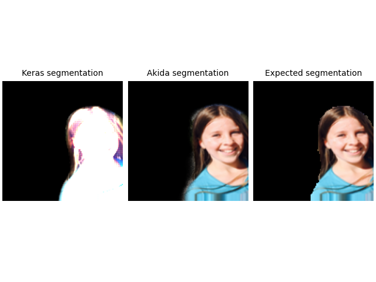

<!DOCTYPE html>
<html class="writer-html5" lang="en" >
<head>
  <meta charset="utf-8" /><meta name="generator" content="Docutils 0.17.1: http://docutils.sourceforge.net/" />

  <meta name="viewport" content="width=device-width, initial-scale=1.0" />
  <title>Segmentation tutorial &mdash; Akida Examples  documentation</title>
      <link rel="stylesheet" href="../../_static/pygments.css" type="text/css" />
      <link rel="stylesheet" href="../../_static/css/theme.css" type="text/css" />
      <link rel="stylesheet" href="../../_static/sg_gallery.css" type="text/css" />
      <link rel="stylesheet" href="../../_static/sg_gallery-binder.css" type="text/css" />
      <link rel="stylesheet" href="../../_static/sg_gallery-dataframe.css" type="text/css" />
      <link rel="stylesheet" href="../../_static/sg_gallery-rendered-html.css" type="text/css" />
      <link rel="stylesheet" href="../../_static/design-style.1e8bd061cd6da7fc9cf755528e8ffc24.min.css" type="text/css" />
      <link rel="stylesheet" href="../../_static/custom.css" type="text/css" />
    <link rel="shortcut icon" href="../../_static/favicon.ico"/>
  <!--[if lt IE 9]>
    <script src="../../_static/js/html5shiv.min.js"></script>
  <![endif]-->
  
        <script data-url_root="../../" id="documentation_options" src="../../_static/documentation_options.js"></script>
        <script src="../../_static/jquery.js"></script>
        <script src="../../_static/underscore.js"></script>
        <script src="../../_static/doctools.js"></script>
        <script src="../../_static/design-tabs.js"></script>
    <script src="../../_static/js/theme.js"></script>
    <link rel="index" title="Index" href="../../genindex.html" />
    <link rel="search" title="Search" href="../../search.html" />
    <link rel="next" title="Build Vision Transformers for Akida" href="plot_7_vision_transformer.html" />
    <link rel="prev" title="YOLO/PASCAL-VOC detection tutorial" href="plot_5_voc_yolo_detection.html" /> 
</head>

<body class="wy-body-for-nav"> 
  <div class="wy-grid-for-nav">
    <nav data-toggle="wy-nav-shift" class="wy-nav-side">
      <div class="wy-side-scroll">
        <div class="wy-side-nav-search"  style="background: #989898" >

          
          
          <a href="../../index.html">
            
              
          </a>
              <div class="version">
                Akida, 2nd Generation
              </div>
<div role="search">
  <form id="rtd-search-form" class="wy-form" action="../../search.html" method="get">
    <input type="text" name="q" placeholder="Search docs" aria-label="Search docs" />
    <input type="hidden" name="check_keywords" value="yes" />
    <input type="hidden" name="area" value="default" />
  </form>
</div>
        </div><div class="wy-menu wy-menu-vertical" data-spy="affix" role="navigation" aria-label="Navigation menu">
              <ul class="current">
<li class="toctree-l1"><a class="reference internal" href="../../index.html">Overview</a></li>
<li class="toctree-l1"><a class="reference internal" href="../../installation.html">Installation</a><ul>
<li class="toctree-l2"><a class="reference internal" href="../../installation.html#supported-configurations">Supported configurations</a></li>
<li class="toctree-l2"><a class="reference internal" href="../../installation.html#quick-installation">Quick installation</a></li>
<li class="toctree-l2"><a class="reference internal" href="../../installation.html#running-examples">Running examples</a></li>
</ul>
</li>
<li class="toctree-l1"><a class="reference internal" href="../../user_guide/user_guide.html">User guide</a><ul>
<li class="toctree-l2"><a class="reference internal" href="../../user_guide/akida.html">Akida user guide</a><ul>
<li class="toctree-l3"><a class="reference internal" href="../../user_guide/akida.html#overview">Overview</a></li>
<li class="toctree-l3"><a class="reference internal" href="../../user_guide/akida.html#programming-interface">Programming interface</a><ul>
<li class="toctree-l4"><a class="reference internal" href="../../user_guide/akida.html#the-akida-model">The Akida Model</a></li>
<li class="toctree-l4"><a class="reference internal" href="../../user_guide/akida.html#akida-layers">Akida layers</a></li>
</ul>
</li>
<li class="toctree-l3"><a class="reference internal" href="../../user_guide/akida.html#model-hardware-mapping">Model Hardware Mapping</a><ul>
<li class="toctree-l4"><a class="reference internal" href="../../user_guide/akida.html#devices">Devices</a></li>
<li class="toctree-l4"><a class="reference internal" href="../../user_guide/akida.html#model-mapping">Model mapping</a></li>
<li class="toctree-l4"><a class="reference internal" href="../../user_guide/akida.html#advanced-mapping-details-and-hardware-devices-usage">Advanced Mapping Details and Hardware Devices Usage</a></li>
<li class="toctree-l4"><a class="reference internal" href="../../user_guide/akida.html#performance-measurement">Performance measurement</a></li>
</ul>
</li>
<li class="toctree-l3"><a class="reference internal" href="../../user_guide/akida.html#using-akida-edge-learning">Using Akida Edge learning</a><ul>
<li class="toctree-l4"><a class="reference internal" href="../../user_guide/akida.html#learning-constraints">Learning constraints</a></li>
<li class="toctree-l4"><a class="reference internal" href="../../user_guide/akida.html#compiling-a-layer">Compiling a layer</a></li>
</ul>
</li>
</ul>
</li>
<li class="toctree-l2"><a class="reference internal" href="../../user_guide/quantizeml.html">QuantizeML toolkit</a><ul>
<li class="toctree-l3"><a class="reference internal" href="../../user_guide/quantizeml.html#overview">Overview</a></li>
<li class="toctree-l3"><a class="reference internal" href="../../user_guide/quantizeml.html#the-fixedpoint-representation">The FixedPoint representation</a></li>
<li class="toctree-l3"><a class="reference internal" href="../../user_guide/quantizeml.html#quantization-flow">Quantization flow</a><ul>
<li class="toctree-l4"><a class="reference internal" href="../../user_guide/quantizeml.html#compatibility-constraints">Compatibility constraints</a></li>
<li class="toctree-l4"><a class="reference internal" href="../../user_guide/quantizeml.html#model-loading">Model loading</a></li>
</ul>
</li>
<li class="toctree-l3"><a class="reference internal" href="../../user_guide/quantizeml.html#command-line-interface">Command line interface</a><ul>
<li class="toctree-l4"><a class="reference internal" href="../../user_guide/quantizeml.html#quantize-cli">quantize CLI</a></li>
<li class="toctree-l4"><a class="reference internal" href="../../user_guide/quantizeml.html#config-cli">config CLI</a></li>
<li class="toctree-l4"><a class="reference internal" href="../../user_guide/quantizeml.html#check-cli">check CLI</a></li>
<li class="toctree-l4"><a class="reference internal" href="../../user_guide/quantizeml.html#insert-rescaling-cli">insert_rescaling CLI</a></li>
</ul>
</li>
<li class="toctree-l3"><a class="reference internal" href="../../user_guide/quantizeml.html#supported-layer-types">Supported layer types</a></li>
</ul>
</li>
<li class="toctree-l2"><a class="reference internal" href="../../user_guide/cnn2snn.html">CNN2SNN toolkit</a><ul>
<li class="toctree-l3"><a class="reference internal" href="../../user_guide/cnn2snn.html#overview">Overview</a></li>
<li class="toctree-l3"><a class="reference internal" href="../../user_guide/cnn2snn.html#conversion-flow">Conversion flow</a><ul>
<li class="toctree-l4"><a class="reference internal" href="../../user_guide/cnn2snn.html#conversion-compatibility">Conversion compatibility</a></li>
<li class="toctree-l4"><a class="reference internal" href="../../user_guide/cnn2snn.html#command-line-interface">Command-line interface</a></li>
</ul>
</li>
<li class="toctree-l3"><a class="reference internal" href="../../user_guide/cnn2snn.html#handling-akida-1-0-and-akida-2-0-specificities">Handling Akida 1.0 and Akida 2.0 specificities</a></li>
<li class="toctree-l3"><a class="reference internal" href="../../user_guide/cnn2snn.html#legacy-quantization-api">Legacy quantization API</a><ul>
<li class="toctree-l4"><a class="reference internal" href="../../user_guide/cnn2snn.html#typical-quantization-scenario">Typical quantization scenario</a></li>
<li class="toctree-l4"><a class="reference internal" href="../../user_guide/cnn2snn.html#design-compatibility-constraints">Design compatibility constraints</a></li>
<li class="toctree-l4"><a class="reference internal" href="../../user_guide/cnn2snn.html#id3">Command-line interface</a></li>
<li class="toctree-l4"><a class="reference internal" href="../../user_guide/cnn2snn.html#layers-considerations">Layers Considerations</a></li>
<li class="toctree-l4"><a class="reference internal" href="../../user_guide/cnn2snn.html#tips-and-tricks">Tips and Tricks</a></li>
</ul>
</li>
</ul>
</li>
<li class="toctree-l2"><a class="reference internal" href="../../user_guide/akida_models.html">Akida models zoo</a><ul>
<li class="toctree-l3"><a class="reference internal" href="../../user_guide/akida_models.html#overview">Overview</a></li>
<li class="toctree-l3"><a class="reference internal" href="../../user_guide/akida_models.html#command-line-interface-for-model-creation">Command-line interface for model creation</a></li>
<li class="toctree-l3"><a class="reference internal" href="../../user_guide/akida_models.html#command-line-interface-for-model-training">Command-line interface for model training</a><ul>
<li class="toctree-l4"><a class="reference internal" href="../../user_guide/akida_models.html#kws-training">KWS training</a></li>
<li class="toctree-l4"><a class="reference internal" href="../../user_guide/akida_models.html#akidanet-training">AkidaNet training</a></li>
</ul>
</li>
<li class="toctree-l3"><a class="reference internal" href="../../user_guide/akida_models.html#command-line-interface-for-model-evaluation">Command-line interface for model evaluation</a></li>
<li class="toctree-l3"><a class="reference internal" href="../../user_guide/akida_models.html#command-line-interface-to-evaluate-model-macs">Command-line interface to evaluate model MACS</a></li>
<li class="toctree-l3"><a class="reference internal" href="../../user_guide/akida_models.html#id1">Layer Blocks</a></li>
<li class="toctree-l3"><a class="reference internal" href="../../user_guide/akida_models.html#handling-akida-1-0-and-akida-2-0-specificities">Handling Akida 1.0 and Akida 2.0 specificities</a></li>
</ul>
</li>
<li class="toctree-l2"><a class="reference internal" href="../../user_guide/engine.html">Akida Engine</a><ul>
<li class="toctree-l3"><a class="reference internal" href="../../user_guide/engine.html#overview">Overview</a></li>
<li class="toctree-l3"><a class="reference internal" href="../../user_guide/engine.html#engine-directory-structure">Engine directory structure</a></li>
<li class="toctree-l3"><a class="reference internal" href="../../user_guide/engine.html#engine-api-overview">Engine API overview</a><ul>
<li class="toctree-l4"><a class="reference internal" href="../../user_guide/engine.html#hardwaredriver">HardwareDriver</a></li>
<li class="toctree-l4"><a class="reference internal" href="../../user_guide/engine.html#hardwaredevice">HardwareDevice</a></li>
<li class="toctree-l4"><a class="reference internal" href="../../user_guide/engine.html#dense">Dense</a></li>
<li class="toctree-l4"><a class="reference internal" href="../../user_guide/engine.html#shape">Shape</a></li>
<li class="toctree-l4"><a class="reference internal" href="../../user_guide/engine.html#hwversion">HwVersion</a></li>
<li class="toctree-l4"><a class="reference internal" href="../../user_guide/engine.html#sparse-and-input-conversion-functions">Sparse and Input conversion functions</a></li>
<li class="toctree-l4"><a class="reference internal" href="../../user_guide/engine.html#other-headers-in-the-api">Other headers in the API</a></li>
</ul>
</li>
</ul>
</li>
</ul>
</li>
<li class="toctree-l1"><a class="reference internal" href="../../api_reference/api_reference.html">API reference</a><ul>
<li class="toctree-l2"><a class="reference internal" href="../../api_reference/akida_apis.html">Akida runtime</a><ul>
<li class="toctree-l3"><a class="reference internal" href="../../api_reference/akida_apis.html#model">Model</a></li>
<li class="toctree-l3"><a class="reference internal" href="../../api_reference/akida_apis.html#layer">Layer</a><ul>
<li class="toctree-l4"><a class="reference internal" href="../../api_reference/akida_apis.html#id1">Layer</a></li>
<li class="toctree-l4"><a class="reference internal" href="../../api_reference/akida_apis.html#mapping">Mapping</a></li>
</ul>
</li>
<li class="toctree-l3"><a class="reference internal" href="../../api_reference/akida_apis.html#akida-layers">Akida layers</a></li>
<li class="toctree-l3"><a class="reference internal" href="../../api_reference/akida_apis.html#akida-v1-layers">Akida V1 layers</a></li>
<li class="toctree-l3"><a class="reference internal" href="../../api_reference/akida_apis.html#akida-v2-layers">Akida V2 layers</a></li>
<li class="toctree-l3"><a class="reference internal" href="../../api_reference/akida_apis.html#layer-parameters">Layer parameters</a><ul>
<li class="toctree-l4"><a class="reference internal" href="../../api_reference/akida_apis.html#layertype">LayerType</a></li>
<li class="toctree-l4"><a class="reference internal" href="../../api_reference/akida_apis.html#padding">Padding</a></li>
<li class="toctree-l4"><a class="reference internal" href="../../api_reference/akida_apis.html#pooltype">PoolType</a></li>
</ul>
</li>
<li class="toctree-l3"><a class="reference internal" href="../../api_reference/akida_apis.html#optimizers">Optimizers</a></li>
<li class="toctree-l3"><a class="reference internal" href="../../api_reference/akida_apis.html#sequence">Sequence</a><ul>
<li class="toctree-l4"><a class="reference internal" href="../../api_reference/akida_apis.html#id2">Sequence</a></li>
<li class="toctree-l4"><a class="reference internal" href="../../api_reference/akida_apis.html#backendtype">BackendType</a></li>
<li class="toctree-l4"><a class="reference internal" href="../../api_reference/akida_apis.html#pass">Pass</a></li>
</ul>
</li>
<li class="toctree-l3"><a class="reference internal" href="../../api_reference/akida_apis.html#device">Device</a><ul>
<li class="toctree-l4"><a class="reference internal" href="../../api_reference/akida_apis.html#id3">Device</a></li>
<li class="toctree-l4"><a class="reference internal" href="../../api_reference/akida_apis.html#hwversion">HwVersion</a></li>
</ul>
</li>
<li class="toctree-l3"><a class="reference internal" href="../../api_reference/akida_apis.html#hwdevice">HWDevice</a><ul>
<li class="toctree-l4"><a class="reference internal" href="../../api_reference/akida_apis.html#id4">HWDevice</a></li>
<li class="toctree-l4"><a class="reference internal" href="../../api_reference/akida_apis.html#socdriver">SocDriver</a></li>
<li class="toctree-l4"><a class="reference internal" href="../../api_reference/akida_apis.html#clockmode">ClockMode</a></li>
</ul>
</li>
<li class="toctree-l3"><a class="reference internal" href="../../api_reference/akida_apis.html#powermeter">PowerMeter</a></li>
<li class="toctree-l3"><a class="reference internal" href="../../api_reference/akida_apis.html#np">NP</a></li>
<li class="toctree-l3"><a class="reference internal" href="../../api_reference/akida_apis.html#tools">Tools</a><ul>
<li class="toctree-l4"><a class="reference internal" href="../../api_reference/akida_apis.html#sparsity">Sparsity</a></li>
</ul>
</li>
</ul>
</li>
<li class="toctree-l2"><a class="reference internal" href="../../api_reference/cnn2snn_apis.html">CNN2SNN</a><ul>
<li class="toctree-l3"><a class="reference internal" href="../../api_reference/cnn2snn_apis.html#akida-version">Akida version</a></li>
<li class="toctree-l3"><a class="reference internal" href="../../api_reference/cnn2snn_apis.html#conversion">Conversion</a></li>
<li class="toctree-l3"><a class="reference internal" href="../../api_reference/cnn2snn_apis.html#legacy-quantization-api">Legacy quantization API</a><ul>
<li class="toctree-l4"><a class="reference internal" href="../../api_reference/cnn2snn_apis.html#utils">Utils</a></li>
<li class="toctree-l4"><a class="reference internal" href="../../api_reference/cnn2snn_apis.html#calibration">Calibration</a></li>
<li class="toctree-l4"><a class="reference internal" href="../../api_reference/cnn2snn_apis.html#transforms">Transforms</a></li>
<li class="toctree-l4"><a class="reference internal" href="../../api_reference/cnn2snn_apis.html#constraint">Constraint</a></li>
<li class="toctree-l4"><a class="reference internal" href="../../api_reference/cnn2snn_apis.html#quantization">Quantization</a></li>
<li class="toctree-l4"><a class="reference internal" href="../../api_reference/cnn2snn_apis.html#quantizers">Quantizers</a></li>
<li class="toctree-l4"><a class="reference internal" href="../../api_reference/cnn2snn_apis.html#quantized-layers">Quantized layers</a></li>
</ul>
</li>
</ul>
</li>
<li class="toctree-l2"><a class="reference internal" href="../../api_reference/quantizeml_apis.html">QuantizeML</a><ul>
<li class="toctree-l3"><a class="reference internal" href="../../api_reference/quantizeml_apis.html#layers">Layers</a><ul>
<li class="toctree-l4"><a class="reference internal" href="../../api_reference/quantizeml_apis.html#reshaping">Reshaping</a></li>
<li class="toctree-l4"><a class="reference internal" href="../../api_reference/quantizeml_apis.html#activations">Activations</a></li>
<li class="toctree-l4"><a class="reference internal" href="../../api_reference/quantizeml_apis.html#attention">Attention</a></li>
<li class="toctree-l4"><a class="reference internal" href="../../api_reference/quantizeml_apis.html#normalization">Normalization</a></li>
<li class="toctree-l4"><a class="reference internal" href="../../api_reference/quantizeml_apis.html#convolution">Convolution</a></li>
<li class="toctree-l4"><a class="reference internal" href="../../api_reference/quantizeml_apis.html#depthwise-convolution">Depthwise convolution</a></li>
<li class="toctree-l4"><a class="reference internal" href="../../api_reference/quantizeml_apis.html#separable-convolution">Separable convolution</a></li>
<li class="toctree-l4"><a class="reference internal" href="../../api_reference/quantizeml_apis.html#dense">Dense</a></li>
<li class="toctree-l4"><a class="reference internal" href="../../api_reference/quantizeml_apis.html#skip-connection">Skip connection</a></li>
<li class="toctree-l4"><a class="reference internal" href="../../api_reference/quantizeml_apis.html#pooling">Pooling</a></li>
<li class="toctree-l4"><a class="reference internal" href="../../api_reference/quantizeml_apis.html#shiftmax">Shiftmax</a></li>
<li class="toctree-l4"><a class="reference internal" href="../../api_reference/quantizeml_apis.html#transformers">Transformers</a></li>
<li class="toctree-l4"><a class="reference internal" href="../../api_reference/quantizeml_apis.html#rescaling">Rescaling</a></li>
<li class="toctree-l4"><a class="reference internal" href="../../api_reference/quantizeml_apis.html#dropout">Dropout</a></li>
<li class="toctree-l4"><a class="reference internal" href="../../api_reference/quantizeml_apis.html#quantizers">Quantizers</a></li>
<li class="toctree-l4"><a class="reference internal" href="../../api_reference/quantizeml_apis.html#quantization-parameters">Quantization parameters</a></li>
<li class="toctree-l4"><a class="reference internal" href="../../api_reference/quantizeml_apis.html#calibration">Calibration</a></li>
<li class="toctree-l4"><a class="reference internal" href="../../api_reference/quantizeml_apis.html#recording">Recording</a></li>
</ul>
</li>
<li class="toctree-l3"><a class="reference internal" href="../../api_reference/quantizeml_apis.html#models">Models</a><ul>
<li class="toctree-l4"><a class="reference internal" href="../../api_reference/quantizeml_apis.html#transforms">Transforms</a></li>
<li class="toctree-l4"><a class="reference internal" href="../../api_reference/quantizeml_apis.html#quantization">Quantization</a></li>
<li class="toctree-l4"><a class="reference internal" href="../../api_reference/quantizeml_apis.html#id1">Calibration</a></li>
<li class="toctree-l4"><a class="reference internal" href="../../api_reference/quantizeml_apis.html#utils">Utils</a></li>
</ul>
</li>
<li class="toctree-l3"><a class="reference internal" href="../../api_reference/quantizeml_apis.html#tensors">Tensors</a><ul>
<li class="toctree-l4"><a class="reference internal" href="../../api_reference/quantizeml_apis.html#qtensor">QTensor</a></li>
<li class="toctree-l4"><a class="reference internal" href="../../api_reference/quantizeml_apis.html#fixedpoint">FixedPoint</a></li>
<li class="toctree-l4"><a class="reference internal" href="../../api_reference/quantizeml_apis.html#qfloat">QFloat</a></li>
</ul>
</li>
<li class="toctree-l3"><a class="reference internal" href="../../api_reference/quantizeml_apis.html#onnx-support">ONNX support</a><ul>
<li class="toctree-l4"><a class="reference internal" href="../../api_reference/quantizeml_apis.html#id2">Layers</a></li>
<li class="toctree-l4"><a class="reference internal" href="../../api_reference/quantizeml_apis.html#custom-patterns">Custom patterns</a></li>
</ul>
</li>
</ul>
</li>
<li class="toctree-l2"><a class="reference internal" href="../../api_reference/akida_models_apis.html">Akida models</a><ul>
<li class="toctree-l3"><a class="reference internal" href="../../api_reference/akida_models_apis.html#layer-blocks">Layer blocks</a><ul>
<li class="toctree-l4"><a class="reference internal" href="../../api_reference/akida_models_apis.html#cnn-blocks">CNN blocks</a></li>
<li class="toctree-l4"><a class="reference internal" href="../../api_reference/akida_models_apis.html#transformers-blocks">Transformers blocks</a></li>
<li class="toctree-l4"><a class="reference internal" href="../../api_reference/akida_models_apis.html#transposed-blocks">Transposed blocks</a></li>
<li class="toctree-l4"><a class="reference internal" href="../../api_reference/akida_models_apis.html#detection-block">Detection block</a></li>
</ul>
</li>
<li class="toctree-l3"><a class="reference internal" href="../../api_reference/akida_models_apis.html#helpers">Helpers</a><ul>
<li class="toctree-l4"><a class="reference internal" href="../../api_reference/akida_models_apis.html#gamma-constraint">Gamma constraint</a></li>
<li class="toctree-l4"><a class="reference internal" href="../../api_reference/akida_models_apis.html#unfusing-separableconvolutional">Unfusing SeparableConvolutional</a></li>
<li class="toctree-l4"><a class="reference internal" href="../../api_reference/akida_models_apis.html#extract-samples">Extract samples</a></li>
</ul>
</li>
<li class="toctree-l3"><a class="reference internal" href="../../api_reference/akida_models_apis.html#knowledge-distillation">Knowledge distillation</a></li>
<li class="toctree-l3"><a class="reference internal" href="../../api_reference/akida_models_apis.html#macs">MACS</a></li>
<li class="toctree-l3"><a class="reference internal" href="../../api_reference/akida_models_apis.html#model-i-o">Model I/O</a></li>
<li class="toctree-l3"><a class="reference internal" href="../../api_reference/akida_models_apis.html#utils">Utils</a></li>
<li class="toctree-l3"><a class="reference internal" href="../../api_reference/akida_models_apis.html#model-zoo">Model zoo</a><ul>
<li class="toctree-l4"><a class="reference internal" href="../../api_reference/akida_models_apis.html#akidanet">AkidaNet</a></li>
<li class="toctree-l4"><a class="reference internal" href="../../api_reference/akida_models_apis.html#mobilenet">Mobilenet</a></li>
<li class="toctree-l4"><a class="reference internal" href="../../api_reference/akida_models_apis.html#ds-cnn">DS-CNN</a></li>
<li class="toctree-l4"><a class="reference internal" href="../../api_reference/akida_models_apis.html#vgg">VGG</a></li>
<li class="toctree-l4"><a class="reference internal" href="../../api_reference/akida_models_apis.html#yolo">YOLO</a></li>
<li class="toctree-l4"><a class="reference internal" href="../../api_reference/akida_models_apis.html#pointnet">PointNet++</a></li>
<li class="toctree-l4"><a class="reference internal" href="../../api_reference/akida_models_apis.html#gxnor">GXNOR</a></li>
<li class="toctree-l4"><a class="reference internal" href="../../api_reference/akida_models_apis.html#centernet">CenterNet</a></li>
<li class="toctree-l4"><a class="reference internal" href="../../api_reference/akida_models_apis.html#akidaunet">AkidaUNet</a></li>
<li class="toctree-l4"><a class="reference internal" href="../../api_reference/akida_models_apis.html#transformers">Transformers</a></li>
</ul>
</li>
</ul>
</li>
</ul>
</li>
<li class="toctree-l1 current"><a class="reference internal" href="../index.html">Examples</a><ul class="current">
<li class="toctree-l2 current"><a class="reference internal" href="../index.html#general-examples">General examples</a><ul class="current">
<li class="toctree-l3"><a class="reference internal" href="plot_0_global_workflow.html">Global Akida workflow</a><ul>
<li class="toctree-l4"><a class="reference internal" href="plot_0_global_workflow.html#create-and-train">1. Create and train</a></li>
<li class="toctree-l4"><a class="reference internal" href="plot_0_global_workflow.html#quantize">2. Quantize</a></li>
<li class="toctree-l4"><a class="reference internal" href="plot_0_global_workflow.html#convert">3. Convert</a></li>
<li class="toctree-l4"><a class="reference internal" href="plot_0_global_workflow.html#gxnor-mnist">4. GXNOR/MNIST</a></li>
</ul>
</li>
<li class="toctree-l3"><a class="reference internal" href="plot_1_akidanet_imagenet.html">AkidaNet/ImageNet inference</a><ul>
<li class="toctree-l4"><a class="reference internal" href="plot_1_akidanet_imagenet.html#dataset-preparation">1. Dataset preparation</a></li>
<li class="toctree-l4"><a class="reference internal" href="plot_1_akidanet_imagenet.html#pretrained-quantized-model">2. Pretrained quantized model</a></li>
<li class="toctree-l4"><a class="reference internal" href="plot_1_akidanet_imagenet.html#conversion-to-akida">3. Conversion to Akida</a></li>
<li class="toctree-l4"><a class="reference internal" href="plot_1_akidanet_imagenet.html#hardware-mapping-and-performance">4. Hardware mapping and performance</a></li>
</ul>
</li>
<li class="toctree-l3"><a class="reference internal" href="plot_2_ds_cnn_kws.html">DS-CNN/KWS inference</a><ul>
<li class="toctree-l4"><a class="reference internal" href="plot_2_ds_cnn_kws.html#load-the-preprocessed-dataset">1. Load the preprocessed dataset</a></li>
<li class="toctree-l4"><a class="reference internal" href="plot_2_ds_cnn_kws.html#load-a-pre-trained-native-keras-model">2. Load a pre-trained native Keras model</a></li>
<li class="toctree-l4"><a class="reference internal" href="plot_2_ds_cnn_kws.html#load-a-pre-trained-quantized-keras-model">3. Load a pre-trained quantized Keras model</a></li>
<li class="toctree-l4"><a class="reference internal" href="plot_2_ds_cnn_kws.html#conversion-to-akida">4. Conversion to Akida</a></li>
<li class="toctree-l4"><a class="reference internal" href="plot_2_ds_cnn_kws.html#confusion-matrix">5. Confusion matrix</a></li>
</ul>
</li>
<li class="toctree-l3"><a class="reference internal" href="plot_3_regression.html">Age estimation (regression) example</a><ul>
<li class="toctree-l4"><a class="reference internal" href="plot_3_regression.html#load-the-utkface-dataset">1. Load the UTKFace Dataset</a></li>
<li class="toctree-l4"><a class="reference internal" href="plot_3_regression.html#load-a-pre-trained-native-keras-model">2. Load a pre-trained native Keras model</a></li>
<li class="toctree-l4"><a class="reference internal" href="plot_3_regression.html#load-a-pre-trained-quantized-keras-model">3. Load a pre-trained quantized Keras model</a></li>
<li class="toctree-l4"><a class="reference internal" href="plot_3_regression.html#conversion-to-akida">4. Conversion to Akida</a></li>
<li class="toctree-l4"><a class="reference internal" href="plot_3_regression.html#estimate-age-on-a-single-image">5. Estimate age on a single image</a></li>
</ul>
</li>
<li class="toctree-l3"><a class="reference internal" href="plot_4_transfer_learning.html">Transfer learning with AkidaNet for PlantVillage</a><ul>
<li class="toctree-l4"><a class="reference internal" href="plot_4_transfer_learning.html#transfer-learning-process">Transfer learning process</a></li>
<li class="toctree-l4"><a class="reference internal" href="plot_4_transfer_learning.html#dataset-preparation">1. Dataset preparation</a></li>
<li class="toctree-l4"><a class="reference internal" href="plot_4_transfer_learning.html#get-a-trained-akidanet-base-model">2. Get a trained AkidaNet base model</a></li>
<li class="toctree-l4"><a class="reference internal" href="plot_4_transfer_learning.html#add-a-classification-head-to-the-model">3. Add a classification head to the model</a></li>
<li class="toctree-l4"><a class="reference internal" href="plot_4_transfer_learning.html#train-for-a-few-epochs">4. Train for a few epochs</a></li>
<li class="toctree-l4"><a class="reference internal" href="plot_4_transfer_learning.html#quantize-the-model">5. Quantize the model</a></li>
<li class="toctree-l4"><a class="reference internal" href="plot_4_transfer_learning.html#compute-accuracy">6. Compute accuracy</a></li>
</ul>
</li>
<li class="toctree-l3"><a class="reference internal" href="plot_5_voc_yolo_detection.html">YOLO/PASCAL-VOC detection tutorial</a><ul>
<li class="toctree-l4"><a class="reference internal" href="plot_5_voc_yolo_detection.html#introduction">1. Introduction</a></li>
<li class="toctree-l4"><a class="reference internal" href="plot_5_voc_yolo_detection.html#preprocessing-tools">2. Preprocessing tools</a></li>
<li class="toctree-l4"><a class="reference internal" href="plot_5_voc_yolo_detection.html#model-architecture">3. Model architecture</a></li>
<li class="toctree-l4"><a class="reference internal" href="plot_5_voc_yolo_detection.html#training">4. Training</a></li>
<li class="toctree-l4"><a class="reference internal" href="plot_5_voc_yolo_detection.html#performance">5. Performance</a></li>
<li class="toctree-l4"><a class="reference internal" href="plot_5_voc_yolo_detection.html#conversion-to-akida">6. Conversion to Akida</a></li>
</ul>
</li>
<li class="toctree-l3 current"><a class="current reference internal" href="#">Segmentation tutorial</a><ul>
<li class="toctree-l4"><a class="reference internal" href="#load-the-dataset">1. Load the dataset</a></li>
<li class="toctree-l4"><a class="reference internal" href="#load-a-pre-trained-native-keras-model">2. Load a pre-trained native Keras model</a></li>
<li class="toctree-l4"><a class="reference internal" href="#load-a-pre-trained-quantized-keras-model">3. Load a pre-trained quantized Keras model</a></li>
<li class="toctree-l4"><a class="reference internal" href="#conversion-to-akida">4. Conversion to Akida</a></li>
<li class="toctree-l4"><a class="reference internal" href="#segment-a-single-image">5. Segment a single image</a></li>
</ul>
</li>
<li class="toctree-l3"><a class="reference internal" href="plot_7_vision_transformer.html">Build Vision Transformers for Akida</a><ul>
<li class="toctree-l4"><a class="reference internal" href="plot_7_vision_transformer.html#model-selection">1. Model selection</a></li>
<li class="toctree-l4"><a class="reference internal" href="plot_7_vision_transformer.html#model-optimization-for-akida-hardware">2. Model optimization for Akida hardware</a></li>
<li class="toctree-l4"><a class="reference internal" href="plot_7_vision_transformer.html#model-training">3. Model Training</a></li>
<li class="toctree-l4"><a class="reference internal" href="plot_7_vision_transformer.html#model-quantization">4. Model quantization</a></li>
<li class="toctree-l4"><a class="reference internal" href="plot_7_vision_transformer.html#conversion-to-akida">5. Conversion to Akida</a></li>
<li class="toctree-l4"><a class="reference internal" href="plot_7_vision_transformer.html#displaying-results-attention-maps">6. Displaying results Attention Maps</a></li>
</ul>
</li>
<li class="toctree-l3"><a class="reference internal" href="plot_8_global_pytorch_workflow.html">PyTorch to Akida workflow</a><ul>
<li class="toctree-l4"><a class="reference internal" href="plot_8_global_pytorch_workflow.html#create-and-train">1. Create and train</a></li>
<li class="toctree-l4"><a class="reference internal" href="plot_8_global_pytorch_workflow.html#export">2. Export</a></li>
<li class="toctree-l4"><a class="reference internal" href="plot_8_global_pytorch_workflow.html#quantize">3. Quantize</a></li>
<li class="toctree-l4"><a class="reference internal" href="plot_8_global_pytorch_workflow.html#convert">4. Convert</a></li>
</ul>
</li>
</ul>
</li>
<li class="toctree-l2"><a class="reference internal" href="../index.html#quantization">Quantization</a><ul>
<li class="toctree-l3"><a class="reference internal" href="../quantization/plot_0_advanced_quantizeml.html">Advanced QuantizeML tutorial</a><ul>
<li class="toctree-l4"><a class="reference internal" href="../quantization/plot_0_advanced_quantizeml.html#defining-a-quantization-scheme">1. Defining a quantization scheme</a></li>
<li class="toctree-l4"><a class="reference internal" href="../quantization/plot_0_advanced_quantizeml.html#calibration">2. Calibration</a></li>
</ul>
</li>
<li class="toctree-l3"><a class="reference internal" href="../quantization/plot_1_upgrading_to_2.0.html">Upgrading to Akida 2.0</a><ul>
<li class="toctree-l4"><a class="reference internal" href="../quantization/plot_1_upgrading_to_2.0.html#workflow-differences">1. Workflow differences</a></li>
<li class="toctree-l4"><a class="reference internal" href="../quantization/plot_1_upgrading_to_2.0.html#models-architecture-differences">2. Models architecture differences</a></li>
<li class="toctree-l4"><a class="reference internal" href="../quantization/plot_1_upgrading_to_2.0.html#using-akidaversion">3. Using <code class="docutils literal notranslate"><span class="pre">AkidaVersion</span></code></a></li>
</ul>
</li>
<li class="toctree-l3"><a class="reference internal" href="../quantization/plot_2_off_the_shelf_quantization.html">Off-the-shelf models quantization</a><ul>
<li class="toctree-l4"><a class="reference internal" href="../quantization/plot_2_off_the_shelf_quantization.html#workflow-overview">1. Workflow overview</a></li>
<li class="toctree-l4"><a class="reference internal" href="../quantization/plot_2_off_the_shelf_quantization.html#data-preparation">2. Data preparation</a></li>
<li class="toctree-l4"><a class="reference internal" href="../quantization/plot_2_off_the_shelf_quantization.html#download-and-export">3. Download and export</a></li>
<li class="toctree-l4"><a class="reference internal" href="../quantization/plot_2_off_the_shelf_quantization.html#quantize">4. Quantize</a></li>
</ul>
</li>
</ul>
</li>
<li class="toctree-l2"><a class="reference internal" href="../index.html#edge-examples">Edge examples</a><ul>
<li class="toctree-l3"><a class="reference internal" href="../edge/plot_0_edge_learning_vision.html">Akida vision edge learning</a><ul>
<li class="toctree-l4"><a class="reference internal" href="../edge/plot_0_edge_learning_vision.html#dataset-preparation">1. Dataset preparation</a></li>
<li class="toctree-l4"><a class="reference internal" href="../edge/plot_0_edge_learning_vision.html#prepare-akida-model-for-learning">2. Prepare Akida model for learning</a></li>
<li class="toctree-l4"><a class="reference internal" href="../edge/plot_0_edge_learning_vision.html#edge-learning-with-akida">3. Edge learning with Akida</a></li>
</ul>
</li>
<li class="toctree-l3"><a class="reference internal" href="../edge/plot_1_edge_learning_kws.html">Akida edge learning for keyword spotting</a><ul>
<li class="toctree-l4"><a class="reference internal" href="../edge/plot_1_edge_learning_kws.html#edge-learning-process">1. Edge learning process</a></li>
<li class="toctree-l4"><a class="reference internal" href="../edge/plot_1_edge_learning_kws.html#dataset-preparation">2. Dataset preparation</a></li>
<li class="toctree-l4"><a class="reference internal" href="../edge/plot_1_edge_learning_kws.html#prepare-akida-model-for-learning">3. Prepare Akida model for learning</a></li>
<li class="toctree-l4"><a class="reference internal" href="../edge/plot_1_edge_learning_kws.html#learn-with-akida-using-the-training-set">4. Learn with Akida using the training set</a></li>
<li class="toctree-l4"><a class="reference internal" href="../edge/plot_1_edge_learning_kws.html#edge-learning">5. Edge learning</a></li>
</ul>
</li>
<li class="toctree-l3"><a class="reference internal" href="../edge/plot_2_edge_learning_parameters.html">Tips to set Akida edge learning parameters</a><ul>
<li class="toctree-l4"><a class="reference internal" href="../edge/plot_2_edge_learning_parameters.html#akida-learning-parameters">1. Akida learning parameters</a></li>
<li class="toctree-l4"><a class="reference internal" href="../edge/plot_2_edge_learning_parameters.html#create-akida-model">2. Create Akida model</a></li>
<li class="toctree-l4"><a class="reference internal" href="../edge/plot_2_edge_learning_parameters.html#estimate-the-required-number-of-weights-of-the-trainable-layer">3. Estimate the required number of weights of the trainable layer</a></li>
<li class="toctree-l4"><a class="reference internal" href="../edge/plot_2_edge_learning_parameters.html#estimate-the-number-of-neurons-per-class">4. Estimate the number of neurons per class</a></li>
</ul>
</li>
</ul>
</li>
<li class="toctree-l2"><a class="reference internal" href="../index.html#deprecated-cnn2snn-tutorials">[Deprecated] CNN2SNN tutorials</a><ul>
<li class="toctree-l3"><a class="reference internal" href="../cnn2snn/plot_1_advanced_cnn2snn.html">Advanced CNN2SNN tutorial</a><ul>
<li class="toctree-l4"><a class="reference internal" href="../cnn2snn/plot_1_advanced_cnn2snn.html#design-a-cnn2snn-quantized-model">1. Design a CNN2SNN quantized model</a></li>
<li class="toctree-l4"><a class="reference internal" href="../cnn2snn/plot_1_advanced_cnn2snn.html#weight-quantizer-details">2. Weight Quantizer Details</a></li>
<li class="toctree-l4"><a class="reference internal" href="../cnn2snn/plot_1_advanced_cnn2snn.html#understanding-quantized-activation">3. Understanding quantized activation</a></li>
<li class="toctree-l4"><a class="reference internal" href="../cnn2snn/plot_1_advanced_cnn2snn.html#how-to-deal-with-too-high-scale-factors">4. How to deal with too high scale factors</a></li>
</ul>
</li>
</ul>
</li>
</ul>
</li>
<li class="toctree-l1"><a class="reference internal" href="../../model_zoo_performance.html">Model zoo performance</a><ul>
<li class="toctree-l2"><a class="reference internal" href="../../model_zoo_performance.html#akida-1-0-models">Akida 1.0 models</a><ul>
<li class="toctree-l3"><a class="reference internal" href="../../model_zoo_performance.html#image-icon-ref-image-domain"> Image domain</a><ul>
<li class="toctree-l4"><a class="reference internal" href="../../model_zoo_performance.html#classification">Classification</a></li>
<li class="toctree-l4"><a class="reference internal" href="../../model_zoo_performance.html#object-detection">Object detection</a></li>
<li class="toctree-l4"><a class="reference internal" href="../../model_zoo_performance.html#regression">Regression</a></li>
<li class="toctree-l4"><a class="reference internal" href="../../model_zoo_performance.html#face-recognition">Face recognition</a></li>
</ul>
</li>
<li class="toctree-l3"><a class="reference internal" href="../../model_zoo_performance.html#audio-icon-ref-audio-domain"> Audio domain</a><ul>
<li class="toctree-l4"><a class="reference internal" href="../../model_zoo_performance.html#keyword-spotting">Keyword spotting</a></li>
</ul>
</li>
<li class="toctree-l3"><a class="reference internal" href="../../model_zoo_performance.html#pointcloud-icon-ref-point-cloud"> Point cloud</a><ul>
<li class="toctree-l4"><a class="reference internal" href="../../model_zoo_performance.html#id1">Classification</a></li>
</ul>
</li>
</ul>
</li>
<li class="toctree-l2"><a class="reference internal" href="../../model_zoo_performance.html#akida-2-0-models">Akida 2.0 models</a><ul>
<li class="toctree-l3"><a class="reference internal" href="../../model_zoo_performance.html#id2"> Image domain</a><ul>
<li class="toctree-l4"><a class="reference internal" href="../../model_zoo_performance.html#id3">Classification</a></li>
<li class="toctree-l4"><a class="reference internal" href="../../model_zoo_performance.html#id6">Object detection</a></li>
<li class="toctree-l4"><a class="reference internal" href="../../model_zoo_performance.html#id7">Regression</a></li>
<li class="toctree-l4"><a class="reference internal" href="../../model_zoo_performance.html#id8">Face recognition</a></li>
<li class="toctree-l4"><a class="reference internal" href="../../model_zoo_performance.html#segmentation">Segmentation</a></li>
</ul>
</li>
<li class="toctree-l3"><a class="reference internal" href="../../model_zoo_performance.html#id10"> Audio domain</a><ul>
<li class="toctree-l4"><a class="reference internal" href="../../model_zoo_performance.html#id11">Keyword spotting</a></li>
</ul>
</li>
<li class="toctree-l3"><a class="reference internal" href="../../model_zoo_performance.html#id12"> Point cloud</a><ul>
<li class="toctree-l4"><a class="reference internal" href="../../model_zoo_performance.html#id13">Classification</a></li>
</ul>
</li>
</ul>
</li>
</ul>
</li>
<li class="toctree-l1"><a class="reference internal" href="../../changelog.html">Changelog</a></li>
<li class="toctree-l1"><a class="reference external" href="https://support.brainchip.com/portal/home">Support</a></li>
<li class="toctree-l1"><a class="reference internal" href="../../license.html">License</a></li>
</ul>

        </div>
      </div>
    </nav>

    <section data-toggle="wy-nav-shift" class="wy-nav-content-wrap"><nav class="wy-nav-top" aria-label="Mobile navigation menu"  style="background: #989898" >
          <i data-toggle="wy-nav-top" class="fa fa-bars"></i>
          <a href="../../index.html">Akida Examples</a>
      </nav>

      <div class="wy-nav-content">
        <div class="rst-content">
          <div role="navigation" aria-label="Page navigation">
  <ul class="wy-breadcrumbs">
      <li><a href="../../index.html" class="icon icon-home" aria-label="Home"></a></li>
          <li class="breadcrumb-item"><a href="../index.html">Akida examples</a></li>
      <li class="breadcrumb-item active">Segmentation tutorial</li>
      <li class="wy-breadcrumbs-aside">
      </li>
  </ul>
  <hr/>
</div>
          <div role="main" class="document" itemscope="itemscope" itemtype="http://schema.org/Article">
           <div itemprop="articleBody">
             
  <div class="sphx-glr-download-link-note admonition note">
<p class="admonition-title">Note</p>
<p><a class="reference internal" href="#sphx-glr-download-examples-general-plot-6-segmentation-py"><span class="std std-ref">Go to the end</span></a>
to download the full example code</p>
</div>
<section class="sphx-glr-example-title" id="segmentation-tutorial">
<span id="sphx-glr-examples-general-plot-6-segmentation-py"></span><h1>Segmentation tutorial<a class="headerlink" href="#segmentation-tutorial" title="Permalink to this headline"></a></h1>
<p>This example demonstrates image segmentation with an Akida-compatible model as
illustrated through person segmentation using the <a class="reference external" href="https://github.com/anilsathyan7/Portrait-Segmentation">Portrait128 dataset</a>.</p>
<p>Using pre-trained models for quick runtime, this example shows the evolution of
model performance for a trained keras floating point model, a keras quantized and
Quantization Aware Trained (QAT) model, and an Akida-converted model. Notice that
the performance of the original keras floating point model is maintained throughout
the model conversion flow.</p>
<section id="load-the-dataset">
<h2>1. Load the dataset<a class="headerlink" href="#load-the-dataset" title="Permalink to this headline"></a></h2>
<div class="highlight-default notranslate"><div class="highlight"><pre><span></span><span class="kn">import</span> <span class="nn">os</span>
<span class="kn">import</span> <span class="nn">numpy</span> <span class="k">as</span> <span class="nn">np</span>
<span class="kn">from</span> <span class="nn">akida_models</span> <span class="kn">import</span> <span class="n">fetch_file</span>

<span class="c1"># Download validation set from Brainchip data server, it contains 10% of the original dataset</span>
<span class="n">data_path</span> <span class="o">=</span> <span class="n">fetch_file</span><span class="p">(</span><span class="n">fname</span><span class="o">=</span><span class="s2">&quot;val.tar.gz&quot;</span><span class="p">,</span>
                       <span class="n">origin</span><span class="o">=</span><span class="s2">&quot;https://data.brainchip.com/dataset-mirror/portrait128/val.tar.gz&quot;</span><span class="p">,</span>
                       <span class="n">cache_subdir</span><span class="o">=</span><span class="n">os</span><span class="o">.</span><span class="n">path</span><span class="o">.</span><span class="n">join</span><span class="p">(</span><span class="s2">&quot;datasets&quot;</span><span class="p">,</span> <span class="s2">&quot;portrait128&quot;</span><span class="p">),</span>
                       <span class="n">extract</span><span class="o">=</span><span class="kc">True</span><span class="p">)</span>

<span class="n">data_dir</span> <span class="o">=</span> <span class="n">os</span><span class="o">.</span><span class="n">path</span><span class="o">.</span><span class="n">join</span><span class="p">(</span><span class="n">os</span><span class="o">.</span><span class="n">path</span><span class="o">.</span><span class="n">dirname</span><span class="p">(</span><span class="n">data_path</span><span class="p">),</span> <span class="s2">&quot;val&quot;</span><span class="p">)</span>
<span class="n">x_val</span> <span class="o">=</span> <span class="n">np</span><span class="o">.</span><span class="n">load</span><span class="p">(</span><span class="n">os</span><span class="o">.</span><span class="n">path</span><span class="o">.</span><span class="n">join</span><span class="p">(</span><span class="n">data_dir</span><span class="p">,</span> <span class="s2">&quot;val_img.npy&quot;</span><span class="p">))</span>
<span class="n">y_val</span> <span class="o">=</span> <span class="n">np</span><span class="o">.</span><span class="n">load</span><span class="p">(</span><span class="n">os</span><span class="o">.</span><span class="n">path</span><span class="o">.</span><span class="n">join</span><span class="p">(</span><span class="n">data_dir</span><span class="p">,</span> <span class="s2">&quot;val_msk.npy&quot;</span><span class="p">))</span><span class="o">.</span><span class="n">astype</span><span class="p">(</span><span class="s1">&#39;uint8&#39;</span><span class="p">)</span>
<span class="n">batch_size</span> <span class="o">=</span> <span class="mi">32</span>
<span class="n">steps</span> <span class="o">=</span> <span class="n">x_val</span><span class="o">.</span><span class="n">shape</span><span class="p">[</span><span class="mi">0</span><span class="p">]</span> <span class="o">//</span> <span class="mi">32</span>

<span class="c1"># Visualize some data</span>
<span class="kn">import</span> <span class="nn">matplotlib.pyplot</span> <span class="k">as</span> <span class="nn">plt</span>

<span class="nb">id</span> <span class="o">=</span> <span class="n">np</span><span class="o">.</span><span class="n">random</span><span class="o">.</span><span class="n">randint</span><span class="p">(</span><span class="mi">0</span><span class="p">,</span> <span class="n">x_val</span><span class="o">.</span><span class="n">shape</span><span class="p">[</span><span class="mi">0</span><span class="p">])</span>

<span class="n">fig</span><span class="p">,</span> <span class="n">axs</span> <span class="o">=</span> <span class="n">plt</span><span class="o">.</span><span class="n">subplots</span><span class="p">(</span><span class="mi">3</span><span class="p">,</span> <span class="mi">3</span><span class="p">,</span> <span class="n">constrained_layout</span><span class="o">=</span><span class="kc">True</span><span class="p">)</span>
<span class="k">for</span> <span class="n">col</span> <span class="ow">in</span> <span class="nb">range</span><span class="p">(</span><span class="mi">3</span><span class="p">):</span>
    <span class="n">axs</span><span class="p">[</span><span class="mi">0</span><span class="p">,</span> <span class="n">col</span><span class="p">]</span><span class="o">.</span><span class="n">imshow</span><span class="p">(</span><span class="n">x_val</span><span class="p">[</span><span class="nb">id</span> <span class="o">+</span> <span class="n">col</span><span class="p">]</span> <span class="o">/</span> <span class="mf">255.</span><span class="p">)</span>
    <span class="n">axs</span><span class="p">[</span><span class="mi">0</span><span class="p">,</span> <span class="n">col</span><span class="p">]</span><span class="o">.</span><span class="n">axis</span><span class="p">(</span><span class="s1">&#39;off&#39;</span><span class="p">)</span>
    <span class="n">axs</span><span class="p">[</span><span class="mi">1</span><span class="p">,</span> <span class="n">col</span><span class="p">]</span><span class="o">.</span><span class="n">imshow</span><span class="p">(</span><span class="mi">1</span> <span class="o">-</span> <span class="n">y_val</span><span class="p">[</span><span class="nb">id</span> <span class="o">+</span> <span class="n">col</span><span class="p">],</span> <span class="n">cmap</span><span class="o">=</span><span class="s1">&#39;Greys&#39;</span><span class="p">)</span>
    <span class="n">axs</span><span class="p">[</span><span class="mi">1</span><span class="p">,</span> <span class="n">col</span><span class="p">]</span><span class="o">.</span><span class="n">axis</span><span class="p">(</span><span class="s1">&#39;off&#39;</span><span class="p">)</span>
    <span class="n">axs</span><span class="p">[</span><span class="mi">2</span><span class="p">,</span> <span class="n">col</span><span class="p">]</span><span class="o">.</span><span class="n">imshow</span><span class="p">(</span><span class="n">x_val</span><span class="p">[</span><span class="nb">id</span> <span class="o">+</span> <span class="n">col</span><span class="p">]</span> <span class="o">/</span> <span class="mf">255.</span> <span class="o">*</span> <span class="n">y_val</span><span class="p">[</span><span class="nb">id</span> <span class="o">+</span> <span class="n">col</span><span class="p">])</span>
    <span class="n">axs</span><span class="p">[</span><span class="mi">2</span><span class="p">,</span> <span class="n">col</span><span class="p">]</span><span class="o">.</span><span class="n">axis</span><span class="p">(</span><span class="s1">&#39;off&#39;</span><span class="p">)</span>

<span class="n">fig</span><span class="o">.</span><span class="n">suptitle</span><span class="p">(</span><span class="s1">&#39;Image, mask and masked image&#39;</span><span class="p">,</span> <span class="n">fontsize</span><span class="o">=</span><span class="mi">10</span><span class="p">)</span>
<span class="n">plt</span><span class="o">.</span><span class="n">show</span><span class="p">()</span>
</pre></div>
</div>
<div class="sphx-glr-script-out highlight-none notranslate"><div class="highlight"><pre><span></span>Downloading data from https://data.brainchip.com/dataset-mirror/portrait128/val.tar.gz.

        0/267313385 [..............................] - ETA: 0s
    49152/267313385 [..............................] - ETA: 4:59
   155648/267313385 [..............................] - ETA: 3:00
   229376/267313385 [..............................] - ETA: 3:14
   319488/267313385 [..............................] - ETA: 3:01
   434176/267313385 [..............................] - ETA: 2:46
   540672/267313385 [..............................] - ETA: 2:39
   630784/267313385 [..............................] - ETA: 2:37
   712704/267313385 [..............................] - ETA: 2:38
   786432/267313385 [..............................] - ETA: 2:41
   851968/267313385 [..............................] - ETA: 2:47
   925696/267313385 [..............................] - ETA: 2:48
   983040/267313385 [..............................] - ETA: 2:55
  1048576/267313385 [..............................] - ETA: 2:59
  1114112/267313385 [..............................] - ETA: 3:01
  1163264/267313385 [..............................] - ETA: 3:05
  1228800/267313385 [..............................] - ETA: 3:06
  1277952/267313385 [..............................] - ETA: 3:10
  1351680/267313385 [..............................] - ETA: 3:11
  1409024/267313385 [..............................] - ETA: 3:14
  1531904/267313385 [..............................] - ETA: 3:08
  1654784/267313385 [..............................] - ETA: 3:03
  1753088/267313385 [..............................] - ETA: 3:01
  1843200/267313385 [..............................] - ETA: 2:59
  1941504/267313385 [..............................] - ETA: 2:57
  2015232/267313385 [..............................] - ETA: 2:57
  2105344/267313385 [..............................] - ETA: 2:57
  2220032/267313385 [..............................] - ETA: 2:54
  2318336/267313385 [..............................] - ETA: 2:53
  2408448/267313385 [..............................] - ETA: 2:52
  2498560/267313385 [..............................] - ETA: 2:51
  2588672/267313385 [..............................] - ETA: 2:51
  2686976/267313385 [..............................] - ETA: 2:49
  2777088/267313385 [..............................] - ETA: 2:49
  2875392/267313385 [..............................] - ETA: 2:48
  2981888/267313385 [..............................] - ETA: 2:47
  3072000/267313385 [..............................] - ETA: 2:46
  3145728/267313385 [..............................] - ETA: 2:46
  3252224/267313385 [..............................] - ETA: 2:45
  3366912/267313385 [..............................] - ETA: 2:44
  3440640/267313385 [..............................] - ETA: 2:45
  3547136/267313385 [..............................] - ETA: 2:43
  3629056/267313385 [..............................] - ETA: 2:43
  3710976/267313385 [..............................] - ETA: 2:43
  3801088/267313385 [..............................] - ETA: 2:43
  3883008/267313385 [..............................] - ETA: 2:53
  3981312/267313385 [..............................] - ETA: 2:52
  4292608/267313385 [..............................] - ETA: 2:43
  4521984/267313385 [..............................] - ETA: 2:37
  4816896/267313385 [..............................] - ETA: 2:30
  5193728/267313385 [..............................] - ETA: 2:22
  5521408/267313385 [..............................] - ETA: 2:16
  5734400/267313385 [..............................] - ETA: 2:13
  5980160/267313385 [..............................] - ETA: 2:10
  6193152/267313385 [..............................] - ETA: 2:07
  6422528/267313385 [..............................] - ETA: 2:05
  6602752/267313385 [..............................] - ETA: 2:03
  6766592/267313385 [..............................] - ETA: 2:02
  6914048/267313385 [..............................] - ETA: 2:02
  7110656/267313385 [..............................] - ETA: 2:00
  7307264/267313385 [..............................] - ETA: 1:59
  7487488/267313385 [..............................] - ETA: 1:58
  7667712/267313385 [..............................] - ETA: 1:57
  7847936/267313385 [..............................] - ETA: 1:56
  8011776/267313385 [..............................] - ETA: 1:55
  8175616/267313385 [..............................] - ETA: 1:54
  8339456/267313385 [..............................] - ETA: 1:53
  8503296/267313385 [..............................] - ETA: 1:53
  8667136/267313385 [..............................] - ETA: 1:52
  8830976/267313385 [..............................] - ETA: 1:51
  8994816/267313385 [&gt;.............................] - ETA: 1:51
  9158656/267313385 [&gt;.............................] - ETA: 1:50
  9322496/267313385 [&gt;.............................] - ETA: 1:50
  9469952/267313385 [&gt;.............................] - ETA: 1:49
  9617408/267313385 [&gt;.............................] - ETA: 1:49
  9781248/267313385 [&gt;.............................] - ETA: 1:48
  9961472/267313385 [&gt;.............................] - ETA: 1:48
 10125312/267313385 [&gt;.............................] - ETA: 1:47
 10289152/267313385 [&gt;.............................] - ETA: 1:47
 10452992/267313385 [&gt;.............................] - ETA: 1:46
 10608640/267313385 [&gt;.............................] - ETA: 1:46
 10747904/267313385 [&gt;.............................] - ETA: 1:46
 10911744/267313385 [&gt;.............................] - ETA: 1:45
 11059200/267313385 [&gt;.............................] - ETA: 1:45
 11206656/267313385 [&gt;.............................] - ETA: 1:45
 11370496/267313385 [&gt;.............................] - ETA: 1:44
 11534336/267313385 [&gt;.............................] - ETA: 1:44
 11681792/267313385 [&gt;.............................] - ETA: 1:44
 11829248/267313385 [&gt;.............................] - ETA: 1:44
 11976704/267313385 [&gt;.............................] - ETA: 1:43
 12124160/267313385 [&gt;.............................] - ETA: 1:43
 12288000/267313385 [&gt;.............................] - ETA: 1:43
 12419072/267313385 [&gt;.............................] - ETA: 1:43
 12533760/267313385 [&gt;.............................] - ETA: 1:43
 12632064/267313385 [&gt;.............................] - ETA: 1:43
 12730368/267313385 [&gt;.............................] - ETA: 1:43
 12861440/267313385 [&gt;.............................] - ETA: 1:43
 12992512/267313385 [&gt;.............................] - ETA: 1:43
 13139968/267313385 [&gt;.............................] - ETA: 1:43
 13336576/267313385 [&gt;.............................] - ETA: 1:43
 13500416/267313385 [&gt;.............................] - ETA: 1:42
 13762560/267313385 [&gt;.............................] - ETA: 1:41
 14008320/267313385 [&gt;.............................] - ETA: 1:40
 14221312/267313385 [&gt;.............................] - ETA: 1:40
 14385152/267313385 [&gt;.............................] - ETA: 1:39
 14548992/267313385 [&gt;.............................] - ETA: 1:39
 14663680/267313385 [&gt;.............................] - ETA: 1:39
 14827520/267313385 [&gt;.............................] - ETA: 1:39
 15007744/267313385 [&gt;.............................] - ETA: 1:38
 15155200/267313385 [&gt;.............................] - ETA: 1:38
 15319040/267313385 [&gt;.............................] - ETA: 1:38
 15482880/267313385 [&gt;.............................] - ETA: 1:38
 15646720/267313385 [&gt;.............................] - ETA: 1:37
 15826944/267313385 [&gt;.............................] - ETA: 1:37
 15974400/267313385 [&gt;.............................] - ETA: 1:37
 16121856/267313385 [&gt;.............................] - ETA: 1:37
 16318464/267313385 [&gt;.............................] - ETA: 1:36
 16465920/267313385 [&gt;.............................] - ETA: 1:36
 16637952/267313385 [&gt;.............................] - ETA: 1:36
 16793600/267313385 [&gt;.............................] - ETA: 1:36
 16924672/267313385 [&gt;.............................] - ETA: 1:36
 17072128/267313385 [&gt;.............................] - ETA: 1:36
 17203200/267313385 [&gt;.............................] - ETA: 1:36
 17350656/267313385 [&gt;.............................] - ETA: 1:36
 17481728/267313385 [&gt;.............................] - ETA: 1:36
 17629184/267313385 [&gt;.............................] - ETA: 1:36
 17793024/267313385 [&gt;.............................] - ETA: 1:35
 17924096/267313385 [=&gt;............................] - ETA: 1:35
 18055168/267313385 [=&gt;............................] - ETA: 1:35
 18186240/267313385 [=&gt;............................] - ETA: 1:35
 18325504/267313385 [=&gt;............................] - ETA: 1:35
 18448384/267313385 [=&gt;............................] - ETA: 1:35
 18595840/267313385 [=&gt;............................] - ETA: 1:35
 18726912/267313385 [=&gt;............................] - ETA: 1:35
 18874368/267313385 [=&gt;............................] - ETA: 1:35
 19005440/267313385 [=&gt;............................] - ETA: 1:35
 19136512/267313385 [=&gt;............................] - ETA: 1:35
 19251200/267313385 [=&gt;............................] - ETA: 1:35
 19382272/267313385 [=&gt;............................] - ETA: 1:35
 19529728/267313385 [=&gt;............................] - ETA: 1:35
 19759104/267313385 [=&gt;............................] - ETA: 1:35
 20103168/267313385 [=&gt;............................] - ETA: 1:33
 20496384/267313385 [=&gt;............................] - ETA: 1:32
 20873216/267313385 [=&gt;............................] - ETA: 1:31
 21233664/267313385 [=&gt;............................] - ETA: 1:30
 21561344/267313385 [=&gt;............................] - ETA: 1:29
 21905408/267313385 [=&gt;............................] - ETA: 1:28
 22265856/267313385 [=&gt;............................] - ETA: 1:27
 22609920/267313385 [=&gt;............................] - ETA: 1:26
 22937600/267313385 [=&gt;............................] - ETA: 1:25
 23298048/267313385 [=&gt;............................] - ETA: 1:24
 23642112/267313385 [=&gt;............................] - ETA: 1:23
 23986176/267313385 [=&gt;............................] - ETA: 1:23
 24330240/267313385 [=&gt;............................] - ETA: 1:22
 24674304/267313385 [=&gt;............................] - ETA: 1:21
 25018368/267313385 [=&gt;............................] - ETA: 1:20
 25346048/267313385 [=&gt;............................] - ETA: 1:20
 25657344/267313385 [=&gt;............................] - ETA: 1:19
 25952256/267313385 [=&gt;............................] - ETA: 1:19
 26247168/267313385 [=&gt;............................] - ETA: 1:18
 26542080/267313385 [=&gt;............................] - ETA: 1:18
 26853376/267313385 [==&gt;...........................] - ETA: 1:17
 27156480/267313385 [==&gt;...........................] - ETA: 1:16
 27443200/267313385 [==&gt;...........................] - ETA: 1:16
 27738112/267313385 [==&gt;...........................] - ETA: 1:16
 28033024/267313385 [==&gt;...........................] - ETA: 1:15
 28311552/267313385 [==&gt;...........................] - ETA: 1:15
 28590080/267313385 [==&gt;...........................] - ETA: 1:14
 28868608/267313385 [==&gt;...........................] - ETA: 1:14
 29163520/267313385 [==&gt;...........................] - ETA: 1:14
 29491200/267313385 [==&gt;...........................] - ETA: 1:13
 29786112/267313385 [==&gt;...........................] - ETA: 1:13
 30081024/267313385 [==&gt;...........................] - ETA: 1:12
 30375936/267313385 [==&gt;...........................] - ETA: 1:12
 30654464/267313385 [==&gt;...........................] - ETA: 1:12
 30900224/267313385 [==&gt;...........................] - ETA: 1:11
 31145984/267313385 [==&gt;...........................] - ETA: 1:11
 31391744/267313385 [==&gt;...........................] - ETA: 1:11
 31653888/267313385 [==&gt;...........................] - ETA: 1:11
 31932416/267313385 [==&gt;...........................] - ETA: 1:10
 32194560/267313385 [==&gt;...........................] - ETA: 1:10
 32456704/267313385 [==&gt;...........................] - ETA: 1:10
 32751616/267313385 [==&gt;...........................] - ETA: 1:09
 33095680/267313385 [==&gt;...........................] - ETA: 1:09
 33456128/267313385 [==&gt;...........................] - ETA: 1:08
 33800192/267313385 [==&gt;...........................] - ETA: 1:08
 34127872/267313385 [==&gt;...........................] - ETA: 1:07
 34406400/267313385 [==&gt;...........................] - ETA: 1:07
 34652160/267313385 [==&gt;...........................] - ETA: 1:07
 34930688/267313385 [==&gt;...........................] - ETA: 1:07
 35241984/267313385 [==&gt;...........................] - ETA: 1:06
 35536896/267313385 [==&gt;...........................] - ETA: 1:06
 35831808/267313385 [===&gt;..........................] - ETA: 1:06
 36077568/267313385 [===&gt;..........................] - ETA: 1:06
 36306944/267313385 [===&gt;..........................] - ETA: 1:05
 36519936/267313385 [===&gt;..........................] - ETA: 1:05
 36732928/267313385 [===&gt;..........................] - ETA: 1:05
 36962304/267313385 [===&gt;..........................] - ETA: 1:05
 37175296/267313385 [===&gt;..........................] - ETA: 1:05
 37371904/267313385 [===&gt;..........................] - ETA: 1:05
 37519360/267313385 [===&gt;..........................] - ETA: 1:05
 37666816/267313385 [===&gt;..........................] - ETA: 1:05
 37781504/267313385 [===&gt;..........................] - ETA: 1:05
 37912576/267313385 [===&gt;..........................] - ETA: 1:05
 38100992/267313385 [===&gt;..........................] - ETA: 1:05
 38338560/267313385 [===&gt;..........................] - ETA: 1:05
 38551552/267313385 [===&gt;..........................] - ETA: 1:05
 38682624/267313385 [===&gt;..........................] - ETA: 1:05
 38797312/267313385 [===&gt;..........................] - ETA: 1:05
 38879232/267313385 [===&gt;..........................] - ETA: 1:05
 38895616/267313385 [===&gt;..........................] - ETA: 1:06
 39288832/267313385 [===&gt;..........................] - ETA: 1:05
 39501824/267313385 [===&gt;..........................] - ETA: 1:05
 39796736/267313385 [===&gt;..........................] - ETA: 1:05
 40042496/267313385 [===&gt;..........................] - ETA: 1:05
 40304640/267313385 [===&gt;..........................] - ETA: 1:05
 40484864/267313385 [===&gt;..........................] - ETA: 1:05
 40738816/267313385 [===&gt;..........................] - ETA: 1:04
 40943616/267313385 [===&gt;..........................] - ETA: 1:04
 41107456/267313385 [===&gt;..........................] - ETA: 1:04
 41271296/267313385 [===&gt;..........................] - ETA: 1:04
 41418752/267313385 [===&gt;..........................] - ETA: 1:04
 41566208/267313385 [===&gt;..........................] - ETA: 1:04
 41697280/267313385 [===&gt;..........................] - ETA: 1:04
 41844736/267313385 [===&gt;..........................] - ETA: 1:04
 41975808/267313385 [===&gt;..........................] - ETA: 1:04
 42106880/267313385 [===&gt;..........................] - ETA: 1:04
 42237952/267313385 [===&gt;..........................] - ETA: 1:04
 42369024/267313385 [===&gt;..........................] - ETA: 1:05
 42500096/267313385 [===&gt;..........................] - ETA: 1:05
 42614784/267313385 [===&gt;..........................] - ETA: 1:05
 42745856/267313385 [===&gt;..........................] - ETA: 1:05
 42876928/267313385 [===&gt;..........................] - ETA: 1:05
 43008000/267313385 [===&gt;..........................] - ETA: 1:05
 43171840/267313385 [===&gt;..........................] - ETA: 1:05
 43302912/267313385 [===&gt;..........................] - ETA: 1:05
 43450368/267313385 [===&gt;..........................] - ETA: 1:05
 43581440/267313385 [===&gt;..........................] - ETA: 1:05
 43712512/267313385 [===&gt;..........................] - ETA: 1:05
 43843584/267313385 [===&gt;..........................] - ETA: 1:05
 43991040/267313385 [===&gt;..........................] - ETA: 1:05
 44138496/267313385 [===&gt;..........................] - ETA: 1:05
 44220416/267313385 [===&gt;..........................] - ETA: 1:05
 44417024/267313385 [===&gt;..........................] - ETA: 1:05
 44515328/267313385 [===&gt;..........................] - ETA: 1:05
 44695552/267313385 [====&gt;.........................] - ETA: 1:05
 44908544/267313385 [====&gt;.........................] - ETA: 1:05
 44998656/267313385 [====&gt;.........................] - ETA: 1:05
 45154304/267313385 [====&gt;.........................] - ETA: 1:05
 45219840/267313385 [====&gt;.........................] - ETA: 1:05
 45350912/267313385 [====&gt;.........................] - ETA: 1:05
 45481984/267313385 [====&gt;.........................] - ETA: 1:05
 45613056/267313385 [====&gt;.........................] - ETA: 1:05
 45744128/267313385 [====&gt;.........................] - ETA: 1:05
 45875200/267313385 [====&gt;.........................] - ETA: 1:05
 46022656/267313385 [====&gt;.........................] - ETA: 1:05
 46137344/267313385 [====&gt;.........................] - ETA: 1:05
 46284800/267313385 [====&gt;.........................] - ETA: 1:05
 46415872/267313385 [====&gt;.........................] - ETA: 1:05
 46563328/267313385 [====&gt;.........................] - ETA: 1:06
 46710784/267313385 [====&gt;.........................] - ETA: 1:06
 46858240/267313385 [====&gt;.........................] - ETA: 1:06
 47005696/267313385 [====&gt;.........................] - ETA: 1:06
 47120384/267313385 [====&gt;.........................] - ETA: 1:06
 47251456/267313385 [====&gt;.........................] - ETA: 1:06
 47366144/267313385 [====&gt;.........................] - ETA: 1:06
 47497216/267313385 [====&gt;.........................] - ETA: 1:06
 47644672/267313385 [====&gt;.........................] - ETA: 1:06
 47874048/267313385 [====&gt;.........................] - ETA: 1:06
 48136192/267313385 [====&gt;.........................] - ETA: 1:05
 48332800/267313385 [====&gt;.........................] - ETA: 1:05
 48496640/267313385 [====&gt;.........................] - ETA: 1:05
 48660480/267313385 [====&gt;.........................] - ETA: 1:05
 48775168/267313385 [====&gt;.........................] - ETA: 1:05
 48889856/267313385 [====&gt;.........................] - ETA: 1:05
 49086464/267313385 [====&gt;.........................] - ETA: 1:05
 49233920/267313385 [====&gt;.........................] - ETA: 1:05
 49381376/267313385 [====&gt;.........................] - ETA: 1:05
 49512448/267313385 [====&gt;.........................] - ETA: 1:05
 49643520/267313385 [====&gt;.........................] - ETA: 1:05
 49758208/267313385 [====&gt;.........................] - ETA: 1:05
 49889280/267313385 [====&gt;.........................] - ETA: 1:05
 50003968/267313385 [====&gt;.........................] - ETA: 1:05
 50118656/267313385 [====&gt;.........................] - ETA: 1:05
 50249728/267313385 [====&gt;.........................] - ETA: 1:05
 50348032/267313385 [====&gt;.........................] - ETA: 1:05
 50462720/267313385 [====&gt;.........................] - ETA: 1:06
 50610176/267313385 [====&gt;.........................] - ETA: 1:06
 50790400/267313385 [====&gt;.........................] - ETA: 1:05
 51036160/267313385 [====&gt;.........................] - ETA: 1:05
 51314688/267313385 [====&gt;.........................] - ETA: 1:05
 51527680/267313385 [====&gt;.........................] - ETA: 1:05
 51707904/267313385 [====&gt;.........................] - ETA: 1:05
 51871744/267313385 [====&gt;.........................] - ETA: 1:05
 51986432/267313385 [====&gt;.........................] - ETA: 1:05
 52101120/267313385 [====&gt;.........................] - ETA: 1:05
 52215808/267313385 [====&gt;.........................] - ETA: 1:05
 52314112/267313385 [====&gt;.........................] - ETA: 1:05
 52436992/267313385 [====&gt;.........................] - ETA: 1:05
 52543488/267313385 [====&gt;.........................] - ETA: 1:05
 52658176/267313385 [====&gt;.........................] - ETA: 1:05
 52789248/267313385 [====&gt;.........................] - ETA: 1:05
 52887552/267313385 [====&gt;.........................] - ETA: 1:05
 53002240/267313385 [====&gt;.........................] - ETA: 1:05
 53116928/267313385 [====&gt;.........................] - ETA: 1:05
 53215232/267313385 [====&gt;.........................] - ETA: 1:05
 53329920/267313385 [====&gt;.........................] - ETA: 1:05
 53444608/267313385 [====&gt;.........................] - ETA: 1:05
 53559296/267313385 [=====&gt;........................] - ETA: 1:05
 53673984/267313385 [=====&gt;........................] - ETA: 1:05
 53772288/267313385 [=====&gt;........................] - ETA: 1:06
 53903360/267313385 [=====&gt;........................] - ETA: 1:06
 54001664/267313385 [=====&gt;........................] - ETA: 1:06
 54099968/267313385 [=====&gt;........................] - ETA: 1:06
 54198272/267313385 [=====&gt;........................] - ETA: 1:06
 54312960/267313385 [=====&gt;........................] - ETA: 1:06
 54444032/267313385 [=====&gt;........................] - ETA: 1:06
 54542336/267313385 [=====&gt;........................] - ETA: 1:06
 54657024/267313385 [=====&gt;........................] - ETA: 1:06
 54771712/267313385 [=====&gt;........................] - ETA: 1:06
 54870016/267313385 [=====&gt;........................] - ETA: 1:06
 54984704/267313385 [=====&gt;........................] - ETA: 1:06
 55091200/267313385 [=====&gt;........................] - ETA: 1:06
 55181312/267313385 [=====&gt;........................] - ETA: 1:06
 55197696/267313385 [=====&gt;........................] - ETA: 1:07
 55640064/267313385 [=====&gt;........................] - ETA: 1:06
 55885824/267313385 [=====&gt;........................] - ETA: 1:06
 56082432/267313385 [=====&gt;........................] - ETA: 1:06
 56229888/267313385 [=====&gt;........................] - ETA: 1:06
 56360960/267313385 [=====&gt;........................] - ETA: 1:06
 56459264/267313385 [=====&gt;........................] - ETA: 1:06
 56557568/267313385 [=====&gt;........................] - ETA: 1:06
 56655872/267313385 [=====&gt;........................] - ETA: 1:06
 56754176/267313385 [=====&gt;........................] - ETA: 1:06
 56852480/267313385 [=====&gt;........................] - ETA: 1:06
 56950784/267313385 [=====&gt;........................] - ETA: 1:06
 57049088/267313385 [=====&gt;........................] - ETA: 1:06
 57147392/267313385 [=====&gt;........................] - ETA: 1:06
 57245696/267313385 [=====&gt;........................] - ETA: 1:06
 57344000/267313385 [=====&gt;........................] - ETA: 1:06
 57425920/267313385 [=====&gt;........................] - ETA: 1:06
 57524224/267313385 [=====&gt;........................] - ETA: 1:06
 57622528/267313385 [=====&gt;........................] - ETA: 1:07
 57720832/267313385 [=====&gt;........................] - ETA: 1:07
 57819136/267313385 [=====&gt;........................] - ETA: 1:07
 57901056/267313385 [=====&gt;........................] - ETA: 1:07
 57999360/267313385 [=====&gt;........................] - ETA: 1:07
 58064896/267313385 [=====&gt;........................] - ETA: 1:07
 58146816/267313385 [=====&gt;........................] - ETA: 1:07
 58425344/267313385 [=====&gt;........................] - ETA: 1:07
 58572800/267313385 [=====&gt;........................] - ETA: 1:07
 58785792/267313385 [=====&gt;........................] - ETA: 1:07
 59015168/267313385 [=====&gt;........................] - ETA: 1:07
 59260928/267313385 [=====&gt;........................] - ETA: 1:07
 59441152/267313385 [=====&gt;........................] - ETA: 1:07
 59654144/267313385 [=====&gt;........................] - ETA: 1:06
 59817984/267313385 [=====&gt;........................] - ETA: 1:06
 59949056/267313385 [=====&gt;........................] - ETA: 1:06
 60080128/267313385 [=====&gt;........................] - ETA: 1:06
 60211200/267313385 [=====&gt;........................] - ETA: 1:06
 60342272/267313385 [=====&gt;........................] - ETA: 1:06
 60440576/267313385 [=====&gt;........................] - ETA: 1:06
 60555264/267313385 [=====&gt;........................] - ETA: 1:06
 60669952/267313385 [=====&gt;........................] - ETA: 1:07
 60751872/267313385 [=====&gt;........................] - ETA: 1:07
 60850176/267313385 [=====&gt;........................] - ETA: 1:07
 60948480/267313385 [=====&gt;........................] - ETA: 1:07
 61063168/267313385 [=====&gt;........................] - ETA: 1:07
 61161472/267313385 [=====&gt;........................] - ETA: 1:07
 61259776/267313385 [=====&gt;........................] - ETA: 1:07
 61358080/267313385 [=====&gt;........................] - ETA: 1:07
 61440000/267313385 [=====&gt;........................] - ETA: 1:07
 61538304/267313385 [=====&gt;........................] - ETA: 1:07
 61620224/267313385 [=====&gt;........................] - ETA: 1:07
 61718528/267313385 [=====&gt;........................] - ETA: 1:07
 61800448/267313385 [=====&gt;........................] - ETA: 1:07
 61898752/267313385 [=====&gt;........................] - ETA: 1:07
 61980672/267313385 [=====&gt;........................] - ETA: 1:07
 62062592/267313385 [=====&gt;........................] - ETA: 1:07
 62160896/267313385 [=====&gt;........................] - ETA: 1:07
 62242816/267313385 [=====&gt;........................] - ETA: 1:07
 62341120/267313385 [=====&gt;........................] - ETA: 1:07
 62406656/267313385 [======&gt;.......................] - ETA: 1:07
 62521344/267313385 [======&gt;.......................] - ETA: 1:08
 62603264/267313385 [======&gt;.......................] - ETA: 1:08
 62717952/267313385 [======&gt;.......................] - ETA: 1:08
 62816256/267313385 [======&gt;.......................] - ETA: 1:08
 62980096/267313385 [======&gt;.......................] - ETA: 1:08
 63193088/267313385 [======&gt;.......................] - ETA: 1:07
 63504384/267313385 [======&gt;.......................] - ETA: 1:07
 63782912/267313385 [======&gt;.......................] - ETA: 1:07
 64061440/267313385 [======&gt;.......................] - ETA: 1:07
 64307200/267313385 [======&gt;.......................] - ETA: 1:07
 64520192/267313385 [======&gt;.......................] - ETA: 1:06
 64716800/267313385 [======&gt;.......................] - ETA: 1:06
 64913408/267313385 [======&gt;.......................] - ETA: 1:06
 65110016/267313385 [======&gt;.......................] - ETA: 1:06
 65355776/267313385 [======&gt;.......................] - ETA: 1:06
 65650688/267313385 [======&gt;.......................] - ETA: 1:06
 65896448/267313385 [======&gt;.......................] - ETA: 1:06
 66109440/267313385 [======&gt;.......................] - ETA: 1:05
 66322432/267313385 [======&gt;.......................] - ETA: 1:05
 66519040/267313385 [======&gt;.......................] - ETA: 1:05
 66715648/267313385 [======&gt;.......................] - ETA: 1:05
 66895872/267313385 [======&gt;.......................] - ETA: 1:05
 67092480/267313385 [======&gt;.......................] - ETA: 1:05
 67256320/267313385 [======&gt;.......................] - ETA: 1:05
 67403776/267313385 [======&gt;.......................] - ETA: 1:05
 67534848/267313385 [======&gt;.......................] - ETA: 1:05
 67649536/267313385 [======&gt;.......................] - ETA: 1:05
 67747840/267313385 [======&gt;.......................] - ETA: 1:05
 67862528/267313385 [======&gt;.......................] - ETA: 1:05
 67928064/267313385 [======&gt;.......................] - ETA: 1:05
 68009984/267313385 [======&gt;.......................] - ETA: 1:05
 68075520/267313385 [======&gt;.......................] - ETA: 1:05
 68091904/267313385 [======&gt;.......................] - ETA: 1:06
 68255744/267313385 [======&gt;.......................] - ETA: 1:05
 68550656/267313385 [======&gt;.......................] - ETA: 1:05
 68780032/267313385 [======&gt;.......................] - ETA: 1:05
 69009408/267313385 [======&gt;.......................] - ETA: 1:05
 69173248/267313385 [======&gt;.......................] - ETA: 1:05
 69468160/267313385 [======&gt;.......................] - ETA: 1:05
 69648384/267313385 [======&gt;.......................] - ETA: 1:05
 69795840/267313385 [======&gt;.......................] - ETA: 1:05
 69976064/267313385 [======&gt;.......................] - ETA: 1:04
 70107136/267313385 [======&gt;.......................] - ETA: 1:04
 70270976/267313385 [======&gt;.......................] - ETA: 1:04
 70500352/267313385 [======&gt;.......................] - ETA: 1:04
 70762496/267313385 [======&gt;.......................] - ETA: 1:04
 71008256/267313385 [======&gt;.......................] - ETA: 1:04
 71254016/267313385 [======&gt;.......................] - ETA: 1:04
 71516160/267313385 [=======&gt;......................] - ETA: 1:04
 71778304/267313385 [=======&gt;......................] - ETA: 1:03
 72040448/267313385 [=======&gt;......................] - ETA: 1:03
 72187904/267313385 [=======&gt;......................] - ETA: 1:03
 72302592/267313385 [=======&gt;......................] - ETA: 1:03
 72417280/267313385 [=======&gt;......................] - ETA: 1:03
 72515584/267313385 [=======&gt;......................] - ETA: 1:03
 72597504/267313385 [=======&gt;......................] - ETA: 1:03
 72712192/267313385 [=======&gt;......................] - ETA: 1:03
 72810496/267313385 [=======&gt;......................] - ETA: 1:03
 72925184/267313385 [=======&gt;......................] - ETA: 1:03
 73023488/267313385 [=======&gt;......................] - ETA: 1:03
 73121792/267313385 [=======&gt;......................] - ETA: 1:03
 73220096/267313385 [=======&gt;......................] - ETA: 1:03
 73318400/267313385 [=======&gt;......................] - ETA: 1:03
 73433088/267313385 [=======&gt;......................] - ETA: 1:03
 73547776/267313385 [=======&gt;......................] - ETA: 1:03
 73662464/267313385 [=======&gt;......................] - ETA: 1:03
 73777152/267313385 [=======&gt;......................] - ETA: 1:03
 73875456/267313385 [=======&gt;......................] - ETA: 1:04
 73973760/267313385 [=======&gt;......................] - ETA: 1:04
 74055680/267313385 [=======&gt;......................] - ETA: 1:04
 74186752/267313385 [=======&gt;......................] - ETA: 1:04
 74285056/267313385 [=======&gt;......................] - ETA: 1:04
 74416128/267313385 [=======&gt;......................] - ETA: 1:04
 74530816/267313385 [=======&gt;......................] - ETA: 1:04
 74629120/267313385 [=======&gt;......................] - ETA: 1:04
 74743808/267313385 [=======&gt;......................] - ETA: 1:04
 74825728/267313385 [=======&gt;......................] - ETA: 1:04
 74956800/267313385 [=======&gt;......................] - ETA: 1:04
 75038720/267313385 [=======&gt;......................] - ETA: 1:04
 75153408/267313385 [=======&gt;......................] - ETA: 1:04
 75251712/267313385 [=======&gt;......................] - ETA: 1:04
 75366400/267313385 [=======&gt;......................] - ETA: 1:04
 75464704/267313385 [=======&gt;......................] - ETA: 1:04
 75563008/267313385 [=======&gt;......................] - ETA: 1:04
 75685888/267313385 [=======&gt;......................] - ETA: 1:04
 75776000/267313385 [=======&gt;......................] - ETA: 1:04
 75874304/267313385 [=======&gt;......................] - ETA: 1:04
 75972608/267313385 [=======&gt;......................] - ETA: 1:04
 76070912/267313385 [=======&gt;......................] - ETA: 1:04
 76169216/267313385 [=======&gt;......................] - ETA: 1:04
 76267520/267313385 [=======&gt;......................] - ETA: 1:04
 76365824/267313385 [=======&gt;......................] - ETA: 1:04
 76464128/267313385 [=======&gt;......................] - ETA: 1:04
 76562432/267313385 [=======&gt;......................] - ETA: 1:04
 76660736/267313385 [=======&gt;......................] - ETA: 1:04
 76759040/267313385 [=======&gt;......................] - ETA: 1:04
 76840960/267313385 [=======&gt;......................] - ETA: 1:04
 76922880/267313385 [=======&gt;......................] - ETA: 1:04
 77021184/267313385 [=======&gt;......................] - ETA: 1:04
 77119488/267313385 [=======&gt;......................] - ETA: 1:04
 77217792/267313385 [=======&gt;......................] - ETA: 1:04
 77332480/267313385 [=======&gt;......................] - ETA: 1:04
 77430784/267313385 [=======&gt;......................] - ETA: 1:04
 77529088/267313385 [=======&gt;......................] - ETA: 1:04
 77627392/267313385 [=======&gt;......................] - ETA: 1:04
 77725696/267313385 [=======&gt;......................] - ETA: 1:04
 77807616/267313385 [=======&gt;......................] - ETA: 1:04
 77905920/267313385 [=======&gt;......................] - ETA: 1:04
 77987840/267313385 [=======&gt;......................] - ETA: 1:04
 78094336/267313385 [=======&gt;......................] - ETA: 1:04
 78168064/267313385 [=======&gt;......................] - ETA: 1:04
 78249984/267313385 [=======&gt;......................] - ETA: 1:04
 78348288/267313385 [=======&gt;......................] - ETA: 1:04
 78446592/267313385 [=======&gt;......................] - ETA: 1:04
 78544896/267313385 [=======&gt;......................] - ETA: 1:05
 78626816/267313385 [=======&gt;......................] - ETA: 1:05
 78725120/267313385 [=======&gt;......................] - ETA: 1:05
 78807040/267313385 [=======&gt;......................] - ETA: 1:05
 78905344/267313385 [=======&gt;......................] - ETA: 1:05
 78987264/267313385 [=======&gt;......................] - ETA: 1:05
 79085568/267313385 [=======&gt;......................] - ETA: 1:05
 79167488/267313385 [=======&gt;......................] - ETA: 1:05
 79249408/267313385 [=======&gt;......................] - ETA: 1:05
 79347712/267313385 [=======&gt;......................] - ETA: 1:05
 79429632/267313385 [=======&gt;......................] - ETA: 1:05
 79511552/267313385 [=======&gt;......................] - ETA: 1:05
 79593472/267313385 [=======&gt;......................] - ETA: 1:05
 79691776/267313385 [=======&gt;......................] - ETA: 1:05
 79790080/267313385 [=======&gt;......................] - ETA: 1:05
 79888384/267313385 [=======&gt;......................] - ETA: 1:05
 79986688/267313385 [=======&gt;......................] - ETA: 1:05
 80068608/267313385 [=======&gt;......................] - ETA: 1:05
 80166912/267313385 [=======&gt;......................] - ETA: 1:05
 80232448/267313385 [========&gt;.....................] - ETA: 1:05
 80330752/267313385 [========&gt;.....................] - ETA: 1:05
 80412672/267313385 [========&gt;.....................] - ETA: 1:05
 80494592/267313385 [========&gt;.....................] - ETA: 1:05
 80576512/267313385 [========&gt;.....................] - ETA: 1:05
 80658432/267313385 [========&gt;.....................] - ETA: 1:05
 80756736/267313385 [========&gt;.....................] - ETA: 1:05
 80838656/267313385 [========&gt;.....................] - ETA: 1:05
 80920576/267313385 [========&gt;.....................] - ETA: 1:05
 81002496/267313385 [========&gt;.....................] - ETA: 1:05
 81068032/267313385 [========&gt;.....................] - ETA: 1:05
 81182720/267313385 [========&gt;.....................] - ETA: 1:05
 81313792/267313385 [========&gt;.....................] - ETA: 1:05
 81526784/267313385 [========&gt;.....................] - ETA: 1:05
 81772544/267313385 [========&gt;.....................] - ETA: 1:05
 82034688/267313385 [========&gt;.....................] - ETA: 1:05
 82231296/267313385 [========&gt;.....................] - ETA: 1:05
 82427904/267313385 [========&gt;.....................] - ETA: 1:05
 82608128/267313385 [========&gt;.....................] - ETA: 1:05
 82771968/267313385 [========&gt;.....................] - ETA: 1:04
 82968576/267313385 [========&gt;.....................] - ETA: 1:04
 83181568/267313385 [========&gt;.....................] - ETA: 1:04
 83460096/267313385 [========&gt;.....................] - ETA: 1:04
 83673088/267313385 [========&gt;.....................] - ETA: 1:04
 83820544/267313385 [========&gt;.....................] - ETA: 1:04
 83935232/267313385 [========&gt;.....................] - ETA: 1:04
 84033536/267313385 [========&gt;.....................] - ETA: 1:04
 84164608/267313385 [========&gt;.....................] - ETA: 1:04
 84246528/267313385 [========&gt;.....................] - ETA: 1:04
 84361216/267313385 [========&gt;.....................] - ETA: 1:04
 84459520/267313385 [========&gt;.....................] - ETA: 1:04
 84557824/267313385 [========&gt;.....................] - ETA: 1:04
 84656128/267313385 [========&gt;.....................] - ETA: 1:04
 84738048/267313385 [========&gt;.....................] - ETA: 1:04
 84836352/267313385 [========&gt;.....................] - ETA: 1:04
 84901888/267313385 [========&gt;.....................] - ETA: 1:04
 85000192/267313385 [========&gt;.....................] - ETA: 1:04
 85082112/267313385 [========&gt;.....................] - ETA: 1:04
 85180416/267313385 [========&gt;.....................] - ETA: 1:04
 85262336/267313385 [========&gt;.....................] - ETA: 1:04
 85344256/267313385 [========&gt;.....................] - ETA: 1:04
 85442560/267313385 [========&gt;.....................] - ETA: 1:04
 85524480/267313385 [========&gt;.....................] - ETA: 1:04
 85622784/267313385 [========&gt;.....................] - ETA: 1:04
 85721088/267313385 [========&gt;.....................] - ETA: 1:04
 85819392/267313385 [========&gt;.....................] - ETA: 1:04
 85917696/267313385 [========&gt;.....................] - ETA: 1:04
 85999616/267313385 [========&gt;.....................] - ETA: 1:04
 86097920/267313385 [========&gt;.....................] - ETA: 1:04
 86163456/267313385 [========&gt;.....................] - ETA: 1:04
 86261760/267313385 [========&gt;.....................] - ETA: 1:04
 86343680/267313385 [========&gt;.....................] - ETA: 1:04
 86425600/267313385 [========&gt;.....................] - ETA: 1:04
 86523904/267313385 [========&gt;.....................] - ETA: 1:04
 86605824/267313385 [========&gt;.....................] - ETA: 1:04
 86704128/267313385 [========&gt;.....................] - ETA: 1:04
 86802432/267313385 [========&gt;.....................] - ETA: 1:04
 86884352/267313385 [========&gt;.....................] - ETA: 1:04
 86982656/267313385 [========&gt;.....................] - ETA: 1:04
 87064576/267313385 [========&gt;.....................] - ETA: 1:04
 87146496/267313385 [========&gt;.....................] - ETA: 1:04
 87179264/267313385 [========&gt;.....................] - ETA: 1:05
 87277568/267313385 [========&gt;.....................] - ETA: 1:05
 87556096/267313385 [========&gt;.....................] - ETA: 1:04
 87719936/267313385 [========&gt;.....................] - ETA: 1:04
 87932928/267313385 [========&gt;.....................] - ETA: 1:04
 88145920/267313385 [========&gt;.....................] - ETA: 1:04
 88342528/267313385 [========&gt;.....................] - ETA: 1:04
 88473600/267313385 [========&gt;.....................] - ETA: 1:04
 88670208/267313385 [========&gt;.....................] - ETA: 1:04
 88834048/267313385 [========&gt;.....................] - ETA: 1:04
 88948736/267313385 [========&gt;.....................] - ETA: 1:04
 89079808/267313385 [========&gt;.....................] - ETA: 1:04
 89227264/267313385 [=========&gt;....................] - ETA: 1:04
 89358336/267313385 [=========&gt;....................] - ETA: 1:04
 89456640/267313385 [=========&gt;....................] - ETA: 1:04
 89587712/267313385 [=========&gt;....................] - ETA: 1:04
 89686016/267313385 [=========&gt;....................] - ETA: 1:04
 89784320/267313385 [=========&gt;....................] - ETA: 1:04
 89882624/267313385 [=========&gt;....................] - ETA: 1:04
 90013696/267313385 [=========&gt;....................] - ETA: 1:04
 90210304/267313385 [=========&gt;....................] - ETA: 1:04
 90505216/267313385 [=========&gt;....................] - ETA: 1:03
 90800128/267313385 [=========&gt;....................] - ETA: 1:03
 91078656/267313385 [=========&gt;....................] - ETA: 1:03
 91340800/267313385 [=========&gt;....................] - ETA: 1:03
 91586560/267313385 [=========&gt;....................] - ETA: 1:03
 91848704/267313385 [=========&gt;....................] - ETA: 1:02
 92110848/267313385 [=========&gt;....................] - ETA: 1:02
 92372992/267313385 [=========&gt;....................] - ETA: 1:02
 92618752/267313385 [=========&gt;....................] - ETA: 1:02
 92897280/267313385 [=========&gt;....................] - ETA: 1:02
 93159424/267313385 [=========&gt;....................] - ETA: 1:02
 93388800/267313385 [=========&gt;....................] - ETA: 1:01
 93675520/267313385 [=========&gt;....................] - ETA: 1:01
 93913088/267313385 [=========&gt;....................] - ETA: 1:01
 94175232/267313385 [=========&gt;....................] - ETA: 1:01
 94437376/267313385 [=========&gt;....................] - ETA: 1:01
 94683136/267313385 [=========&gt;....................] - ETA: 1:01
 94961664/267313385 [=========&gt;....................] - ETA: 1:00
 95207424/267313385 [=========&gt;....................] - ETA: 1:00
 95469568/267313385 [=========&gt;....................] - ETA: 1:00
 95715328/267313385 [=========&gt;....................] - ETA: 1:00
 95944704/267313385 [=========&gt;....................] - ETA: 1:00
 96206848/267313385 [=========&gt;....................] - ETA: 1:00
 96436224/267313385 [=========&gt;....................] - ETA: 59s 
 96681984/267313385 [=========&gt;....................] - ETA: 59s
 96927744/267313385 [=========&gt;....................] - ETA: 59s
 97173504/267313385 [=========&gt;....................] - ETA: 59s
 97402880/267313385 [=========&gt;....................] - ETA: 59s
 97648640/267313385 [=========&gt;....................] - ETA: 59s
 97878016/267313385 [=========&gt;....................] - ETA: 59s
 98123776/267313385 [==========&gt;...................] - ETA: 58s
 98353152/267313385 [==========&gt;...................] - ETA: 58s
 98598912/267313385 [==========&gt;...................] - ETA: 58s
 98828288/267313385 [==========&gt;...................] - ETA: 58s
 99057664/267313385 [==========&gt;...................] - ETA: 58s
 99287040/267313385 [==========&gt;...................] - ETA: 58s
 99516416/267313385 [==========&gt;...................] - ETA: 58s
 99745792/267313385 [==========&gt;...................] - ETA: 58s
 99975168/267313385 [==========&gt;...................] - ETA: 57s
100204544/267313385 [==========&gt;...................] - ETA: 57s
100433920/267313385 [==========&gt;...................] - ETA: 57s
100663296/267313385 [==========&gt;...................] - ETA: 57s
100892672/267313385 [==========&gt;...................] - ETA: 57s
101122048/267313385 [==========&gt;...................] - ETA: 57s
101335040/267313385 [==========&gt;...................] - ETA: 57s
101564416/267313385 [==========&gt;...................] - ETA: 57s
101777408/267313385 [==========&gt;...................] - ETA: 56s
101990400/267313385 [==========&gt;...................] - ETA: 56s
102219776/267313385 [==========&gt;...................] - ETA: 56s
102449152/267313385 [==========&gt;...................] - ETA: 56s
102662144/267313385 [==========&gt;...................] - ETA: 56s
102825984/267313385 [==========&gt;...................] - ETA: 56s
103038976/267313385 [==========&gt;...................] - ETA: 56s
103268352/267313385 [==========&gt;...................] - ETA: 56s
103497728/267313385 [==========&gt;...................] - ETA: 56s
103759872/267313385 [==========&gt;...................] - ETA: 55s
104022016/267313385 [==========&gt;...................] - ETA: 55s
104275968/267313385 [==========&gt;...................] - ETA: 55s
104513536/267313385 [==========&gt;...................] - ETA: 55s
104775680/267313385 [==========&gt;...................] - ETA: 55s
105021440/267313385 [==========&gt;...................] - ETA: 55s
105267200/267313385 [==========&gt;...................] - ETA: 55s
105480192/267313385 [==========&gt;...................] - ETA: 55s
105725952/267313385 [==========&gt;...................] - ETA: 54s
105955328/267313385 [==========&gt;...................] - ETA: 54s
106201088/267313385 [==========&gt;...................] - ETA: 54s
106414080/267313385 [==========&gt;...................] - ETA: 54s
106643456/267313385 [==========&gt;...................] - ETA: 54s
106840064/267313385 [==========&gt;...................] - ETA: 54s
107053056/267313385 [===========&gt;..................] - ETA: 54s
107266048/267313385 [===========&gt;..................] - ETA: 54s
107479040/267313385 [===========&gt;..................] - ETA: 54s
107692032/267313385 [===========&gt;..................] - ETA: 53s
107905024/267313385 [===========&gt;..................] - ETA: 53s
108118016/267313385 [===========&gt;..................] - ETA: 53s
108314624/267313385 [===========&gt;..................] - ETA: 53s
108527616/267313385 [===========&gt;..................] - ETA: 53s
108724224/267313385 [===========&gt;..................] - ETA: 53s
108937216/267313385 [===========&gt;..................] - ETA: 53s
109117440/267313385 [===========&gt;..................] - ETA: 53s
109314048/267313385 [===========&gt;..................] - ETA: 53s
109527040/267313385 [===========&gt;..................] - ETA: 53s
109707264/267313385 [===========&gt;..................] - ETA: 53s
109903872/267313385 [===========&gt;..................] - ETA: 52s
110067712/267313385 [===========&gt;..................] - ETA: 52s
110264320/267313385 [===========&gt;..................] - ETA: 52s
110477312/267313385 [===========&gt;..................] - ETA: 52s
110641152/267313385 [===========&gt;..................] - ETA: 52s
110821376/267313385 [===========&gt;..................] - ETA: 52s
111001600/267313385 [===========&gt;..................] - ETA: 52s
111181824/267313385 [===========&gt;..................] - ETA: 52s
111345664/267313385 [===========&gt;..................] - ETA: 52s
111509504/267313385 [===========&gt;..................] - ETA: 52s
111706112/267313385 [===========&gt;..................] - ETA: 52s
111869952/267313385 [===========&gt;..................] - ETA: 52s
112033792/267313385 [===========&gt;..................] - ETA: 52s
112214016/267313385 [===========&gt;..................] - ETA: 52s
112394240/267313385 [===========&gt;..................] - ETA: 51s
112541696/267313385 [===========&gt;..................] - ETA: 51s
112721920/267313385 [===========&gt;..................] - ETA: 51s
112902144/267313385 [===========&gt;..................] - ETA: 51s
113098752/267313385 [===========&gt;..................] - ETA: 51s
113295360/267313385 [===========&gt;..................] - ETA: 51s
113491968/267313385 [===========&gt;..................] - ETA: 51s
113704960/267313385 [===========&gt;..................] - ETA: 51s
113917952/267313385 [===========&gt;..................] - ETA: 51s
114114560/267313385 [===========&gt;..................] - ETA: 51s
114294784/267313385 [===========&gt;..................] - ETA: 51s
114491392/267313385 [===========&gt;..................] - ETA: 51s
114671616/267313385 [===========&gt;..................] - ETA: 51s
114868224/267313385 [===========&gt;..................] - ETA: 50s
115048448/267313385 [===========&gt;..................] - ETA: 50s
115212288/267313385 [===========&gt;..................] - ETA: 50s
115392512/267313385 [===========&gt;..................] - ETA: 50s
115572736/267313385 [===========&gt;..................] - ETA: 50s
115720192/267313385 [===========&gt;..................] - ETA: 50s
115900416/267313385 [============&gt;.................] - ETA: 50s
116064256/267313385 [============&gt;.................] - ETA: 50s
116211712/267313385 [============&gt;.................] - ETA: 50s
116391936/267313385 [============&gt;.................] - ETA: 50s
116572160/267313385 [============&gt;.................] - ETA: 50s
116736000/267313385 [============&gt;.................] - ETA: 50s
116916224/267313385 [============&gt;.................] - ETA: 50s
117080064/267313385 [============&gt;.................] - ETA: 50s
117243904/267313385 [============&gt;.................] - ETA: 50s
117440512/267313385 [============&gt;.................] - ETA: 49s
117637120/267313385 [============&gt;.................] - ETA: 49s
117833728/267313385 [============&gt;.................] - ETA: 49s
118013952/267313385 [============&gt;.................] - ETA: 49s
118194176/267313385 [============&gt;.................] - ETA: 49s
118390784/267313385 [============&gt;.................] - ETA: 49s
118571008/267313385 [============&gt;.................] - ETA: 49s
118767616/267313385 [============&gt;.................] - ETA: 49s
118964224/267313385 [============&gt;.................] - ETA: 49s
119128064/267313385 [============&gt;.................] - ETA: 49s
119324672/267313385 [============&gt;.................] - ETA: 49s
119521280/267313385 [============&gt;.................] - ETA: 49s
119701504/267313385 [============&gt;.................] - ETA: 49s
119881728/267313385 [============&gt;.................] - ETA: 49s
120078336/267313385 [============&gt;.................] - ETA: 48s
120258560/267313385 [============&gt;.................] - ETA: 48s
120455168/267313385 [============&gt;.................] - ETA: 48s
120651776/267313385 [============&gt;.................] - ETA: 48s
120832000/267313385 [============&gt;.................] - ETA: 48s
121028608/267313385 [============&gt;.................] - ETA: 48s
121225216/267313385 [============&gt;.................] - ETA: 48s
121405440/267313385 [============&gt;.................] - ETA: 48s
121585664/267313385 [============&gt;.................] - ETA: 48s
121782272/267313385 [============&gt;.................] - ETA: 48s
121962496/267313385 [============&gt;.................] - ETA: 48s
122142720/267313385 [============&gt;.................] - ETA: 48s
122339328/267313385 [============&gt;.................] - ETA: 48s
122519552/267313385 [============&gt;.................] - ETA: 47s
122716160/267313385 [============&gt;.................] - ETA: 47s
122912768/267313385 [============&gt;.................] - ETA: 47s
123092992/267313385 [============&gt;.................] - ETA: 47s
123273216/267313385 [============&gt;.................] - ETA: 47s
123469824/267313385 [============&gt;.................] - ETA: 47s
123650048/267313385 [============&gt;.................] - ETA: 47s
123846656/267313385 [============&gt;.................] - ETA: 47s
124043264/267313385 [============&gt;.................] - ETA: 47s
124223488/267313385 [============&gt;.................] - ETA: 47s
124403712/267313385 [============&gt;.................] - ETA: 47s
124616704/267313385 [============&gt;.................] - ETA: 47s
124796928/267313385 [=============&gt;................] - ETA: 47s
124977152/267313385 [=============&gt;................] - ETA: 46s
125190144/267313385 [=============&gt;................] - ETA: 46s
125370368/267313385 [=============&gt;................] - ETA: 46s
125566976/267313385 [=============&gt;................] - ETA: 46s
125763584/267313385 [=============&gt;................] - ETA: 46s
125943808/267313385 [=============&gt;................] - ETA: 46s
126140416/267313385 [=============&gt;................] - ETA: 46s
126353408/267313385 [=============&gt;................] - ETA: 46s
126550016/267313385 [=============&gt;................] - ETA: 46s
126746624/267313385 [=============&gt;................] - ETA: 46s
126959616/267313385 [=============&gt;................] - ETA: 46s
127139840/267313385 [=============&gt;................] - ETA: 46s
127352832/267313385 [=============&gt;................] - ETA: 46s
127565824/267313385 [=============&gt;................] - ETA: 45s
127762432/267313385 [=============&gt;................] - ETA: 45s
127975424/267313385 [=============&gt;................] - ETA: 45s
128204800/267313385 [=============&gt;................] - ETA: 45s
128401408/267313385 [=============&gt;................] - ETA: 45s
128614400/267313385 [=============&gt;................] - ETA: 45s
128827392/267313385 [=============&gt;................] - ETA: 45s
129040384/267313385 [=============&gt;................] - ETA: 45s
129253376/267313385 [=============&gt;................] - ETA: 45s
129482752/267313385 [=============&gt;................] - ETA: 45s
129679360/267313385 [=============&gt;................] - ETA: 45s
129908736/267313385 [=============&gt;................] - ETA: 44s
130138112/267313385 [=============&gt;................] - ETA: 44s
130351104/267313385 [=============&gt;................] - ETA: 44s
130580480/267313385 [=============&gt;................] - ETA: 44s
130809856/267313385 [=============&gt;................] - ETA: 44s
131022848/267313385 [=============&gt;................] - ETA: 44s
131252224/267313385 [=============&gt;................] - ETA: 44s
131497984/267313385 [=============&gt;................] - ETA: 44s
131710976/267313385 [=============&gt;................] - ETA: 44s
131956736/267313385 [=============&gt;................] - ETA: 44s
132186112/267313385 [=============&gt;................] - ETA: 43s
132415488/267313385 [=============&gt;................] - ETA: 43s
132644864/267313385 [=============&gt;................] - ETA: 43s
132890624/267313385 [=============&gt;................] - ETA: 43s
133120000/267313385 [=============&gt;................] - ETA: 43s
133349376/267313385 [=============&gt;................] - ETA: 43s
133595136/267313385 [=============&gt;................] - ETA: 43s
133808128/267313385 [==============&gt;...............] - ETA: 43s
134053888/267313385 [==============&gt;...............] - ETA: 43s
134283264/267313385 [==============&gt;...............] - ETA: 43s
134529024/267313385 [==============&gt;...............] - ETA: 42s
134774784/267313385 [==============&gt;...............] - ETA: 42s
135102464/267313385 [==============&gt;...............] - ETA: 42s
135462912/267313385 [==============&gt;...............] - ETA: 42s
135856128/267313385 [==============&gt;...............] - ETA: 42s
136232960/267313385 [==============&gt;...............] - ETA: 42s
136577024/267313385 [==============&gt;...............] - ETA: 41s
136839168/267313385 [==============&gt;...............] - ETA: 41s
137101312/267313385 [==============&gt;...............] - ETA: 41s
137347072/267313385 [==============&gt;...............] - ETA: 41s
137576448/267313385 [==============&gt;...............] - ETA: 41s
137805824/267313385 [==============&gt;...............] - ETA: 41s
138051584/267313385 [==============&gt;...............] - ETA: 41s
138297344/267313385 [==============&gt;...............] - ETA: 41s
138543104/267313385 [==============&gt;...............] - ETA: 41s
138772480/267313385 [==============&gt;...............] - ETA: 41s
139018240/267313385 [==============&gt;...............] - ETA: 40s
139247616/267313385 [==============&gt;...............] - ETA: 40s
139493376/267313385 [==============&gt;...............] - ETA: 40s
139706368/267313385 [==============&gt;...............] - ETA: 40s
139952128/267313385 [==============&gt;...............] - ETA: 40s
140181504/267313385 [==============&gt;...............] - ETA: 40s
140410880/267313385 [==============&gt;...............] - ETA: 40s
140656640/267313385 [==============&gt;...............] - ETA: 40s
140886016/267313385 [==============&gt;...............] - ETA: 40s
141115392/267313385 [==============&gt;...............] - ETA: 40s
141344768/267313385 [==============&gt;...............] - ETA: 40s
141590528/267313385 [==============&gt;...............] - ETA: 39s
141836288/267313385 [==============&gt;...............] - ETA: 39s
142065664/267313385 [==============&gt;...............] - ETA: 39s
142311424/267313385 [==============&gt;...............] - ETA: 39s
142540800/267313385 [==============&gt;...............] - ETA: 39s
142770176/267313385 [===============&gt;..............] - ETA: 39s
143015936/267313385 [===============&gt;..............] - ETA: 39s
143245312/267313385 [===============&gt;..............] - ETA: 39s
143507456/267313385 [===============&gt;..............] - ETA: 39s
143736832/267313385 [===============&gt;..............] - ETA: 39s
143966208/267313385 [===============&gt;..............] - ETA: 38s
144211968/267313385 [===============&gt;..............] - ETA: 38s
144441344/267313385 [===============&gt;..............] - ETA: 38s
144687104/267313385 [===============&gt;..............] - ETA: 38s
144932864/267313385 [===============&gt;..............] - ETA: 38s
145162240/267313385 [===============&gt;..............] - ETA: 38s
145424384/267313385 [===============&gt;..............] - ETA: 38s
145653760/267313385 [===============&gt;..............] - ETA: 38s
145915904/267313385 [===============&gt;..............] - ETA: 38s
146178048/267313385 [===============&gt;..............] - ETA: 38s
146407424/267313385 [===============&gt;..............] - ETA: 37s
146669568/267313385 [===============&gt;..............] - ETA: 37s
146915328/267313385 [===============&gt;..............] - ETA: 37s
147144704/267313385 [===============&gt;..............] - ETA: 37s
147423232/267313385 [===============&gt;..............] - ETA: 37s
147668992/267313385 [===============&gt;..............] - ETA: 37s
147914752/267313385 [===============&gt;..............] - ETA: 37s
148193280/267313385 [===============&gt;..............] - ETA: 37s
148422656/267313385 [===============&gt;..............] - ETA: 37s
148848640/267313385 [===============&gt;..............] - ETA: 37s
149635072/267313385 [===============&gt;..............] - ETA: 36s
149848064/267313385 [===============&gt;..............] - ETA: 36s
150061056/267313385 [===============&gt;..............] - ETA: 36s
150306816/267313385 [===============&gt;..............] - ETA: 36s
150552576/267313385 [===============&gt;..............] - ETA: 36s
150814720/267313385 [===============&gt;..............] - ETA: 36s
151060480/267313385 [===============&gt;..............] - ETA: 36s
151339008/267313385 [===============&gt;..............] - ETA: 36s
151584768/267313385 [================&gt;.............] - ETA: 35s
151846912/267313385 [================&gt;.............] - ETA: 35s
152059904/267313385 [================&gt;.............] - ETA: 35s
152322048/267313385 [================&gt;.............] - ETA: 35s
152584192/267313385 [================&gt;.............] - ETA: 35s
152846336/267313385 [================&gt;.............] - ETA: 35s
153108480/267313385 [================&gt;.............] - ETA: 35s
153305088/267313385 [================&gt;.............] - ETA: 35s
153567232/267313385 [================&gt;.............] - ETA: 35s
153796608/267313385 [================&gt;.............] - ETA: 35s
154042368/267313385 [================&gt;.............] - ETA: 34s
154288128/267313385 [================&gt;.............] - ETA: 34s
154501120/267313385 [================&gt;.............] - ETA: 34s
154763264/267313385 [================&gt;.............] - ETA: 34s
154976256/267313385 [================&gt;.............] - ETA: 34s
155238400/267313385 [================&gt;.............] - ETA: 34s
155467776/267313385 [================&gt;.............] - ETA: 34s
155680768/267313385 [================&gt;.............] - ETA: 34s
155926528/267313385 [================&gt;.............] - ETA: 34s
156139520/267313385 [================&gt;.............] - ETA: 34s
156401664/267313385 [================&gt;.............] - ETA: 34s
156647424/267313385 [================&gt;.............] - ETA: 34s
156844032/267313385 [================&gt;.............] - ETA: 33s
157106176/267313385 [================&gt;.............] - ETA: 33s
157368320/267313385 [================&gt;.............] - ETA: 33s
157597696/267313385 [================&gt;.............] - ETA: 33s
157843456/267313385 [================&gt;.............] - ETA: 33s
158056448/267313385 [================&gt;.............] - ETA: 33s
158302208/267313385 [================&gt;.............] - ETA: 33s
158547968/267313385 [================&gt;.............] - ETA: 33s
158760960/267313385 [================&gt;.............] - ETA: 33s
159498240/267313385 [================&gt;.............] - ETA: 33s
159711232/267313385 [================&gt;.............] - ETA: 32s
159940608/267313385 [================&gt;.............] - ETA: 32s
160153600/267313385 [================&gt;.............] - ETA: 32s
160350208/267313385 [================&gt;.............] - ETA: 32s
160595968/267313385 [=================&gt;............] - ETA: 32s
160792576/267313385 [=================&gt;............] - ETA: 32s
161038336/267313385 [=================&gt;............] - ETA: 32s
161267712/267313385 [=================&gt;............] - ETA: 32s
161513472/267313385 [=================&gt;............] - ETA: 32s
161742848/267313385 [=================&gt;............] - ETA: 32s
161988608/267313385 [=================&gt;............] - ETA: 32s
162168832/267313385 [=================&gt;............] - ETA: 32s
162447360/267313385 [=================&gt;............] - ETA: 31s
162643968/267313385 [=================&gt;............] - ETA: 31s
162906112/267313385 [=================&gt;............] - ETA: 31s
163053568/267313385 [=================&gt;............] - ETA: 31s
163348480/267313385 [=================&gt;............] - ETA: 31s
163528704/267313385 [=================&gt;............] - ETA: 31s
163774464/267313385 [=================&gt;............] - ETA: 31s
163971072/267313385 [=================&gt;............] - ETA: 31s
164184064/267313385 [=================&gt;............] - ETA: 31s
164429824/267313385 [=================&gt;............] - ETA: 31s
164626432/267313385 [=================&gt;............] - ETA: 31s
164872192/267313385 [=================&gt;............] - ETA: 31s
165019648/267313385 [=================&gt;............] - ETA: 31s
165281792/267313385 [=================&gt;............] - ETA: 30s
165494784/267313385 [=================&gt;............] - ETA: 30s
165724160/267313385 [=================&gt;............] - ETA: 30s
165937152/267313385 [=================&gt;............] - ETA: 30s
166100992/267313385 [=================&gt;............] - ETA: 30s
166346752/267313385 [=================&gt;............] - ETA: 30s
166543360/267313385 [=================&gt;............] - ETA: 30s
166772736/267313385 [=================&gt;............] - ETA: 30s
166985728/267313385 [=================&gt;............] - ETA: 30s
167165952/267313385 [=================&gt;............] - ETA: 30s
167411712/267313385 [=================&gt;............] - ETA: 30s
167608320/267313385 [=================&gt;............] - ETA: 30s
167854080/267313385 [=================&gt;............] - ETA: 30s
168050688/267313385 [=================&gt;............] - ETA: 30s
168263680/267313385 [=================&gt;............] - ETA: 29s
168493056/267313385 [=================&gt;............] - ETA: 29s
168689664/267313385 [=================&gt;............] - ETA: 29s
168919040/267313385 [=================&gt;............] - ETA: 29s
169115648/267313385 [=================&gt;............] - ETA: 29s
169345024/267313385 [==================&gt;...........] - ETA: 29s
169574400/267313385 [==================&gt;...........] - ETA: 29s
169771008/267313385 [==================&gt;...........] - ETA: 29s
170016768/267313385 [==================&gt;...........] - ETA: 29s
170196992/267313385 [==================&gt;...........] - ETA: 29s
170426368/267313385 [==================&gt;...........] - ETA: 29s
170655744/267313385 [==================&gt;...........] - ETA: 29s
170819584/267313385 [==================&gt;...........] - ETA: 29s
171065344/267313385 [==================&gt;...........] - ETA: 29s
171245568/267313385 [==================&gt;...........] - ETA: 28s
171261952/267313385 [==================&gt;...........] - ETA: 29s
171966464/267313385 [==================&gt;...........] - ETA: 28s
172146688/267313385 [==================&gt;...........] - ETA: 28s
172326912/267313385 [==================&gt;...........] - ETA: 28s
172556288/267313385 [==================&gt;...........] - ETA: 28s
172785664/267313385 [==================&gt;...........] - ETA: 28s
172982272/267313385 [==================&gt;...........] - ETA: 28s
173228032/267313385 [==================&gt;...........] - ETA: 28s
173441024/267313385 [==================&gt;...........] - ETA: 28s
173654016/267313385 [==================&gt;...........] - ETA: 28s
173834240/267313385 [==================&gt;...........] - ETA: 28s
174030848/267313385 [==================&gt;...........] - ETA: 28s
174211072/267313385 [==================&gt;...........] - ETA: 28s
174374912/267313385 [==================&gt;...........] - ETA: 27s
174538752/267313385 [==================&gt;...........] - ETA: 27s
174686208/267313385 [==================&gt;...........] - ETA: 27s
174833664/267313385 [==================&gt;...........] - ETA: 27s
174850048/267313385 [==================&gt;...........] - ETA: 27s
175063040/267313385 [==================&gt;...........] - ETA: 27s
175243264/267313385 [==================&gt;...........] - ETA: 27s
175620096/267313385 [==================&gt;...........] - ETA: 27s
175751168/267313385 [==================&gt;...........] - ETA: 27s
175865856/267313385 [==================&gt;...........] - ETA: 27s
176046080/267313385 [==================&gt;...........] - ETA: 27s
176193536/267313385 [==================&gt;...........] - ETA: 27s
176275456/267313385 [==================&gt;...........] - ETA: 27s
176373760/267313385 [==================&gt;...........] - ETA: 27s
176439296/267313385 [==================&gt;...........] - ETA: 27s
176504832/267313385 [==================&gt;...........] - ETA: 27s
176701440/267313385 [==================&gt;...........] - ETA: 27s
176832512/267313385 [==================&gt;...........] - ETA: 27s
176930816/267313385 [==================&gt;...........] - ETA: 27s
177127424/267313385 [==================&gt;...........] - ETA: 27s
177422336/267313385 [==================&gt;...........] - ETA: 27s
177733632/267313385 [==================&gt;...........] - ETA: 27s
178044928/267313385 [==================&gt;...........] - ETA: 27s
178339840/267313385 [===================&gt;..........] - ETA: 26s
178601984/267313385 [===================&gt;..........] - ETA: 26s
178847744/267313385 [===================&gt;..........] - ETA: 26s
179093504/267313385 [===================&gt;..........] - ETA: 26s
179322880/267313385 [===================&gt;..........] - ETA: 26s
179552256/267313385 [===================&gt;..........] - ETA: 26s
179798016/267313385 [===================&gt;..........] - ETA: 26s
180027392/267313385 [===================&gt;..........] - ETA: 26s
180240384/267313385 [===================&gt;..........] - ETA: 26s
180453376/267313385 [===================&gt;..........] - ETA: 26s
180682752/267313385 [===================&gt;..........] - ETA: 26s
180895744/267313385 [===================&gt;..........] - ETA: 26s
181108736/267313385 [===================&gt;..........] - ETA: 26s
181321728/267313385 [===================&gt;..........] - ETA: 25s
181534720/267313385 [===================&gt;..........] - ETA: 25s
181747712/267313385 [===================&gt;..........] - ETA: 25s
181960704/267313385 [===================&gt;..........] - ETA: 25s
182173696/267313385 [===================&gt;..........] - ETA: 25s
182386688/267313385 [===================&gt;..........] - ETA: 25s
182616064/267313385 [===================&gt;..........] - ETA: 25s
182829056/267313385 [===================&gt;..........] - ETA: 25s
183058432/267313385 [===================&gt;..........] - ETA: 25s
183271424/267313385 [===================&gt;..........] - ETA: 25s
183492608/267313385 [===================&gt;..........] - ETA: 25s
183713792/267313385 [===================&gt;..........] - ETA: 25s
183926784/267313385 [===================&gt;..........] - ETA: 25s
184156160/267313385 [===================&gt;..........] - ETA: 25s
184385536/267313385 [===================&gt;..........] - ETA: 24s
184614912/267313385 [===================&gt;..........] - ETA: 24s
184844288/267313385 [===================&gt;..........] - ETA: 24s
185073664/267313385 [===================&gt;..........] - ETA: 24s
185303040/267313385 [===================&gt;..........] - ETA: 24s
185532416/267313385 [===================&gt;..........] - ETA: 24s
185761792/267313385 [===================&gt;..........] - ETA: 24s
185991168/267313385 [===================&gt;..........] - ETA: 24s
186220544/267313385 [===================&gt;..........] - ETA: 24s
186466304/267313385 [===================&gt;..........] - ETA: 24s
186695680/267313385 [===================&gt;..........] - ETA: 24s
186941440/267313385 [===================&gt;..........] - ETA: 24s
187187200/267313385 [====================&gt;.........] - ETA: 24s
187432960/267313385 [====================&gt;.........] - ETA: 23s
187678720/267313385 [====================&gt;.........] - ETA: 23s
187924480/267313385 [====================&gt;.........] - ETA: 23s
188170240/267313385 [====================&gt;.........] - ETA: 23s
188416000/267313385 [====================&gt;.........] - ETA: 23s
188645376/267313385 [====================&gt;.........] - ETA: 23s
188891136/267313385 [====================&gt;.........] - ETA: 23s
189136896/267313385 [====================&gt;.........] - ETA: 23s
189382656/267313385 [====================&gt;.........] - ETA: 23s
189628416/267313385 [====================&gt;.........] - ETA: 23s
189874176/267313385 [====================&gt;.........] - ETA: 23s
190136320/267313385 [====================&gt;.........] - ETA: 23s
190398464/267313385 [====================&gt;.........] - ETA: 22s
190660608/267313385 [====================&gt;.........] - ETA: 22s
190922752/267313385 [====================&gt;.........] - ETA: 22s
191168512/267313385 [====================&gt;.........] - ETA: 22s
191414272/267313385 [====================&gt;.........] - ETA: 22s
191676416/267313385 [====================&gt;.........] - ETA: 22s
191938560/267313385 [====================&gt;.........] - ETA: 22s
192184320/267313385 [====================&gt;.........] - ETA: 22s
192446464/267313385 [====================&gt;.........] - ETA: 22s
192708608/267313385 [====================&gt;.........] - ETA: 22s
192937984/267313385 [====================&gt;.........] - ETA: 22s
193167360/267313385 [====================&gt;.........] - ETA: 22s
193413120/267313385 [====================&gt;.........] - ETA: 21s
193626112/267313385 [====================&gt;.........] - ETA: 21s
193839104/267313385 [====================&gt;.........] - ETA: 21s
194052096/267313385 [====================&gt;.........] - ETA: 21s
194265088/267313385 [====================&gt;.........] - ETA: 21s
194445312/267313385 [====================&gt;.........] - ETA: 21s
194609152/267313385 [====================&gt;.........] - ETA: 21s
194805760/267313385 [====================&gt;.........] - ETA: 21s
194985984/267313385 [====================&gt;.........] - ETA: 21s
195117056/267313385 [====================&gt;.........] - ETA: 21s
195248128/267313385 [====================&gt;.........] - ETA: 21s
195395584/267313385 [====================&gt;.........] - ETA: 21s
195510272/267313385 [====================&gt;.........] - ETA: 21s
195657728/267313385 [====================&gt;.........] - ETA: 21s
195756032/267313385 [====================&gt;.........] - ETA: 21s
195903488/267313385 [====================&gt;.........] - ETA: 21s
196018176/267313385 [====================&gt;.........] - ETA: 21s
196149248/267313385 [=====================&gt;........] - ETA: 21s
196263936/267313385 [=====================&gt;........] - ETA: 21s
196378624/267313385 [=====================&gt;........] - ETA: 21s
196509696/267313385 [=====================&gt;........] - ETA: 21s
196673536/267313385 [=====================&gt;........] - ETA: 21s
196935680/267313385 [=====================&gt;........] - ETA: 20s
197246976/267313385 [=====================&gt;........] - ETA: 20s
197558272/267313385 [=====================&gt;........] - ETA: 20s
197836800/267313385 [=====================&gt;........] - ETA: 20s
198148096/267313385 [=====================&gt;........] - ETA: 20s
198344704/267313385 [=====================&gt;........] - ETA: 20s
198557696/267313385 [=====================&gt;........] - ETA: 20s
198754304/267313385 [=====================&gt;........] - ETA: 20s
198967296/267313385 [=====================&gt;........] - ETA: 20s
199188480/267313385 [=====================&gt;........] - ETA: 20s
199409664/267313385 [=====================&gt;........] - ETA: 20s
199622656/267313385 [=====================&gt;........] - ETA: 20s
199802880/267313385 [=====================&gt;........] - ETA: 20s
199974912/267313385 [=====================&gt;........] - ETA: 19s
200146944/267313385 [=====================&gt;........] - ETA: 19s
200343552/267313385 [=====================&gt;........] - ETA: 19s
200556544/267313385 [=====================&gt;........] - ETA: 19s
200638464/267313385 [=====================&gt;........] - ETA: 19s
200835072/267313385 [=====================&gt;........] - ETA: 19s
201048064/267313385 [=====================&gt;........] - ETA: 19s
201162752/267313385 [=====================&gt;........] - ETA: 19s
201359360/267313385 [=====================&gt;........] - ETA: 19s
201555968/267313385 [=====================&gt;........] - ETA: 19s
201670656/267313385 [=====================&gt;........] - ETA: 19s
201850880/267313385 [=====================&gt;........] - ETA: 19s
202047488/267313385 [=====================&gt;........] - ETA: 19s
202227712/267313385 [=====================&gt;........] - ETA: 19s
202326016/267313385 [=====================&gt;........] - ETA: 19s
202522624/267313385 [=====================&gt;........] - ETA: 19s
202686464/267313385 [=====================&gt;........] - ETA: 19s
202817536/267313385 [=====================&gt;........] - ETA: 19s
203030528/267313385 [=====================&gt;........] - ETA: 19s
203235328/267313385 [=====================&gt;........] - ETA: 19s
203325440/267313385 [=====================&gt;........] - ETA: 18s
203554816/267313385 [=====================&gt;........] - ETA: 18s
203767808/267313385 [=====================&gt;........] - ETA: 18s
203898880/267313385 [=====================&gt;........] - ETA: 18s
204046336/267313385 [=====================&gt;........] - ETA: 18s
204242944/267313385 [=====================&gt;........] - ETA: 18s
204324864/267313385 [=====================&gt;........] - ETA: 18s
204537856/267313385 [=====================&gt;........] - ETA: 18s
204701696/267313385 [=====================&gt;........] - ETA: 18s
204800000/267313385 [=====================&gt;........] - ETA: 18s
204963840/267313385 [======================&gt;.......] - ETA: 18s
205062144/267313385 [======================&gt;.......] - ETA: 18s
205242368/267313385 [======================&gt;.......] - ETA: 18s
205258752/267313385 [======================&gt;.......] - ETA: 18s
205324288/267313385 [======================&gt;.......] - ETA: 18s
205651968/267313385 [======================&gt;.......] - ETA: 18s
205668352/267313385 [======================&gt;.......] - ETA: 18s
205750272/267313385 [======================&gt;.......] - ETA: 18s
205914112/267313385 [======================&gt;.......] - ETA: 18s
205979648/267313385 [======================&gt;.......] - ETA: 18s
206045184/267313385 [======================&gt;.......] - ETA: 18s
206094336/267313385 [======================&gt;.......] - ETA: 18s
206209024/267313385 [======================&gt;.......] - ETA: 18s
206225408/267313385 [======================&gt;.......] - ETA: 18s
206258176/267313385 [======================&gt;.......] - ETA: 18s
206356480/267313385 [======================&gt;.......] - ETA: 18s
206487552/267313385 [======================&gt;.......] - ETA: 18s
206618624/267313385 [======================&gt;.......] - ETA: 18s
206766080/267313385 [======================&gt;.......] - ETA: 18s
206913536/267313385 [======================&gt;.......] - ETA: 18s
207060992/267313385 [======================&gt;.......] - ETA: 18s
207224832/267313385 [======================&gt;.......] - ETA: 18s
207388672/267313385 [======================&gt;.......] - ETA: 18s
207536128/267313385 [======================&gt;.......] - ETA: 18s
207683584/267313385 [======================&gt;.......] - ETA: 18s
207814656/267313385 [======================&gt;.......] - ETA: 17s
207929344/267313385 [======================&gt;.......] - ETA: 17s
208044032/267313385 [======================&gt;.......] - ETA: 17s
208158720/267313385 [======================&gt;.......] - ETA: 17s
208289792/267313385 [======================&gt;.......] - ETA: 17s
208420864/267313385 [======================&gt;.......] - ETA: 17s
208551936/267313385 [======================&gt;.......] - ETA: 17s
208683008/267313385 [======================&gt;.......] - ETA: 17s
208814080/267313385 [======================&gt;.......] - ETA: 17s
208928768/267313385 [======================&gt;.......] - ETA: 17s
209059840/267313385 [======================&gt;.......] - ETA: 17s
209207296/267313385 [======================&gt;.......] - ETA: 17s
209354752/267313385 [======================&gt;.......] - ETA: 17s
209502208/267313385 [======================&gt;.......] - ETA: 17s
209666048/267313385 [======================&gt;.......] - ETA: 17s
209813504/267313385 [======================&gt;.......] - ETA: 17s
209944576/267313385 [======================&gt;.......] - ETA: 17s
210092032/267313385 [======================&gt;.......] - ETA: 17s
210239488/267313385 [======================&gt;.......] - ETA: 17s
210386944/267313385 [======================&gt;.......] - ETA: 17s
210534400/267313385 [======================&gt;.......] - ETA: 17s
210649088/267313385 [======================&gt;.......] - ETA: 17s
210763776/267313385 [======================&gt;.......] - ETA: 17s
210911232/267313385 [======================&gt;.......] - ETA: 17s
211042304/267313385 [======================&gt;.......] - ETA: 17s
211222528/267313385 [======================&gt;.......] - ETA: 17s
211402752/267313385 [======================&gt;.......] - ETA: 16s
211582976/267313385 [======================&gt;.......] - ETA: 16s
211763200/267313385 [======================&gt;.......] - ETA: 16s
211943424/267313385 [======================&gt;.......] - ETA: 16s
212090880/267313385 [======================&gt;.......] - ETA: 16s
212271104/267313385 [======================&gt;.......] - ETA: 16s
212451328/267313385 [======================&gt;.......] - ETA: 16s
212631552/267313385 [======================&gt;.......] - ETA: 16s
212811776/267313385 [======================&gt;.......] - ETA: 16s
212992000/267313385 [======================&gt;.......] - ETA: 16s
213172224/267313385 [======================&gt;.......] - ETA: 16s
213352448/267313385 [======================&gt;.......] - ETA: 16s
213549056/267313385 [======================&gt;.......] - ETA: 16s
213762048/267313385 [======================&gt;.......] - ETA: 16s
213958656/267313385 [=======================&gt;......] - ETA: 16s
214155264/267313385 [=======================&gt;......] - ETA: 16s
214351872/267313385 [=======================&gt;......] - ETA: 16s
214564864/267313385 [=======================&gt;......] - ETA: 15s
214761472/267313385 [=======================&gt;......] - ETA: 15s
214958080/267313385 [=======================&gt;......] - ETA: 15s
215171072/267313385 [=======================&gt;......] - ETA: 15s
215384064/267313385 [=======================&gt;......] - ETA: 15s
215613440/267313385 [=======================&gt;......] - ETA: 15s
215826432/267313385 [=======================&gt;......] - ETA: 15s
216023040/267313385 [=======================&gt;......] - ETA: 15s
216252416/267313385 [=======================&gt;......] - ETA: 15s
216465408/267313385 [=======================&gt;......] - ETA: 15s
216694784/267313385 [=======================&gt;......] - ETA: 15s
216924160/267313385 [=======================&gt;......] - ETA: 15s
217137152/267313385 [=======================&gt;......] - ETA: 15s
217366528/267313385 [=======================&gt;......] - ETA: 15s
217595904/267313385 [=======================&gt;......] - ETA: 15s
217825280/267313385 [=======================&gt;......] - ETA: 14s
218054656/267313385 [=======================&gt;......] - ETA: 14s
218284032/267313385 [=======================&gt;......] - ETA: 14s
218513408/267313385 [=======================&gt;......] - ETA: 14s
218759168/267313385 [=======================&gt;......] - ETA: 14s
219004928/267313385 [=======================&gt;......] - ETA: 14s
219250688/267313385 [=======================&gt;......] - ETA: 14s
219496448/267313385 [=======================&gt;......] - ETA: 14s
219742208/267313385 [=======================&gt;......] - ETA: 14s
219987968/267313385 [=======================&gt;......] - ETA: 14s
220250112/267313385 [=======================&gt;......] - ETA: 14s
220512256/267313385 [=======================&gt;......] - ETA: 14s
220774400/267313385 [=======================&gt;......] - ETA: 14s
221036544/267313385 [=======================&gt;......] - ETA: 13s
221298688/267313385 [=======================&gt;......] - ETA: 13s
221560832/267313385 [=======================&gt;......] - ETA: 13s
221839360/267313385 [=======================&gt;......] - ETA: 13s
222109696/267313385 [=======================&gt;......] - ETA: 13s
222363648/267313385 [=======================&gt;......] - ETA: 13s
222625792/267313385 [=======================&gt;......] - ETA: 13s
222871552/267313385 [========================&gt;.....] - ETA: 13s
223100928/267313385 [========================&gt;.....] - ETA: 13s
223330304/267313385 [========================&gt;.....] - ETA: 13s
223559680/267313385 [========================&gt;.....] - ETA: 13s
223789056/267313385 [========================&gt;.....] - ETA: 13s
224083968/267313385 [========================&gt;.....] - ETA: 12s
224378880/267313385 [========================&gt;.....] - ETA: 12s
224657408/267313385 [========================&gt;.....] - ETA: 12s
224952320/267313385 [========================&gt;.....] - ETA: 12s
225247232/267313385 [========================&gt;.....] - ETA: 12s
225542144/267313385 [========================&gt;.....] - ETA: 12s
225820672/267313385 [========================&gt;.....] - ETA: 12s
226099200/267313385 [========================&gt;.....] - ETA: 12s
226377728/267313385 [========================&gt;.....] - ETA: 12s
226623488/267313385 [========================&gt;.....] - ETA: 12s
226852864/267313385 [========================&gt;.....] - ETA: 12s
227082240/267313385 [========================&gt;.....] - ETA: 11s
227377152/267313385 [========================&gt;.....] - ETA: 11s
227672064/267313385 [========================&gt;.....] - ETA: 11s
227966976/267313385 [========================&gt;.....] - ETA: 11s
228245504/267313385 [========================&gt;.....] - ETA: 11s
228507648/267313385 [========================&gt;.....] - ETA: 11s
228802560/267313385 [========================&gt;.....] - ETA: 11s
229064704/267313385 [========================&gt;.....] - ETA: 11s
229277696/267313385 [========================&gt;.....] - ETA: 11s
229507072/267313385 [========================&gt;.....] - ETA: 11s
229769216/267313385 [========================&gt;.....] - ETA: 11s
229965824/267313385 [========================&gt;.....] - ETA: 11s
230129664/267313385 [========================&gt;.....] - ETA: 11s
230260736/267313385 [========================&gt;.....] - ETA: 11s
230424576/267313385 [========================&gt;.....] - ETA: 10s
230703104/267313385 [========================&gt;.....] - ETA: 10s
230965248/267313385 [========================&gt;.....] - ETA: 10s
231276544/267313385 [========================&gt;.....] - ETA: 10s
231505920/267313385 [========================&gt;.....] - ETA: 10s
231751680/267313385 [=========================&gt;....] - ETA: 10s
232013824/267313385 [=========================&gt;....] - ETA: 10s
232357888/267313385 [=========================&gt;....] - ETA: 10s
232685568/267313385 [=========================&gt;....] - ETA: 10s
233013248/267313385 [=========================&gt;....] - ETA: 10s
233308160/267313385 [=========================&gt;....] - ETA: 10s
233603072/267313385 [=========================&gt;....] - ETA: 9s 
233848832/267313385 [=========================&gt;....] - ETA: 9s
234160128/267313385 [=========================&gt;....] - ETA: 9s
234438656/267313385 [=========================&gt;....] - ETA: 9s
234700800/267313385 [=========================&gt;....] - ETA: 9s
234864640/267313385 [=========================&gt;....] - ETA: 9s
234979328/267313385 [=========================&gt;....] - ETA: 9s
235077632/267313385 [=========================&gt;....] - ETA: 9s
235208704/267313385 [=========================&gt;....] - ETA: 9s
235323392/267313385 [=========================&gt;....] - ETA: 9s
235438080/267313385 [=========================&gt;....] - ETA: 9s
235667456/267313385 [=========================&gt;....] - ETA: 9s
235995136/267313385 [=========================&gt;....] - ETA: 9s
236339200/267313385 [=========================&gt;....] - ETA: 9s
236683264/267313385 [=========================&gt;....] - ETA: 9s
236978176/267313385 [=========================&gt;....] - ETA: 8s
237158400/267313385 [=========================&gt;....] - ETA: 8s
237305856/267313385 [=========================&gt;....] - ETA: 8s
237436928/267313385 [=========================&gt;....] - ETA: 8s
237666304/267313385 [=========================&gt;....] - ETA: 8s
237944832/267313385 [=========================&gt;....] - ETA: 8s
238223360/267313385 [=========================&gt;....] - ETA: 8s
238534656/267313385 [=========================&gt;....] - ETA: 8s
238845952/267313385 [=========================&gt;....] - ETA: 8s
239140864/267313385 [=========================&gt;....] - ETA: 8s
239435776/267313385 [=========================&gt;....] - ETA: 8s
239747072/267313385 [=========================&gt;....] - ETA: 8s
239992832/267313385 [=========================&gt;....] - ETA: 8s
240271360/267313385 [=========================&gt;....] - ETA: 7s
240517120/267313385 [=========================&gt;....] - ETA: 7s
240779264/267313385 [==========================&gt;...] - ETA: 7s
240959488/267313385 [==========================&gt;...] - ETA: 7s
241188864/267313385 [==========================&gt;...] - ETA: 7s
241336320/267313385 [==========================&gt;...] - ETA: 7s
241516544/267313385 [==========================&gt;...] - ETA: 7s
241704960/267313385 [==========================&gt;...] - ETA: 7s
241893376/267313385 [==========================&gt;...] - ETA: 7s
242073600/267313385 [==========================&gt;...] - ETA: 7s
242302976/267313385 [==========================&gt;...] - ETA: 7s
242647040/267313385 [==========================&gt;...] - ETA: 7s
242958336/267313385 [==========================&gt;...] - ETA: 7s
243318784/267313385 [==========================&gt;...] - ETA: 7s
243662848/267313385 [==========================&gt;...] - ETA: 6s
244006912/267313385 [==========================&gt;...] - ETA: 6s
244350976/267313385 [==========================&gt;...] - ETA: 6s
244678656/267313385 [==========================&gt;...] - ETA: 6s
244973568/267313385 [==========================&gt;...] - ETA: 6s
245301248/267313385 [==========================&gt;...] - ETA: 6s
245628928/267313385 [==========================&gt;...] - ETA: 6s
245956608/267313385 [==========================&gt;...] - ETA: 6s
246267904/267313385 [==========================&gt;...] - ETA: 6s
246595584/267313385 [==========================&gt;...] - ETA: 6s
246890496/267313385 [==========================&gt;...] - ETA: 5s
247169024/267313385 [==========================&gt;...] - ETA: 5s
247398400/267313385 [==========================&gt;...] - ETA: 5s
247627776/267313385 [==========================&gt;...] - ETA: 5s
247889920/267313385 [==========================&gt;...] - ETA: 5s
248152064/267313385 [==========================&gt;...] - ETA: 5s
248430592/267313385 [==========================&gt;...] - ETA: 5s
248659968/267313385 [==========================&gt;...] - ETA: 5s
248922112/267313385 [==========================&gt;...] - ETA: 5s
249167872/267313385 [==========================&gt;...] - ETA: 5s
249413632/267313385 [==========================&gt;...] - ETA: 5s
249659392/267313385 [===========================&gt;..] - ETA: 5s
249888768/267313385 [===========================&gt;..] - ETA: 5s
250118144/267313385 [===========================&gt;..] - ETA: 4s
250314752/267313385 [===========================&gt;..] - ETA: 4s
250560512/267313385 [===========================&gt;..] - ETA: 4s
250839040/267313385 [===========================&gt;..] - ETA: 4s
251133952/267313385 [===========================&gt;..] - ETA: 4s
251445248/267313385 [===========================&gt;..] - ETA: 4s
251756544/267313385 [===========================&gt;..] - ETA: 4s
252051456/267313385 [===========================&gt;..] - ETA: 4s
252346368/267313385 [===========================&gt;..] - ETA: 4s
252641280/267313385 [===========================&gt;..] - ETA: 4s
252919808/267313385 [===========================&gt;..] - ETA: 4s
253214720/267313385 [===========================&gt;..] - ETA: 4s
253542400/267313385 [===========================&gt;..] - ETA: 3s
253886464/267313385 [===========================&gt;..] - ETA: 3s
254214144/267313385 [===========================&gt;..] - ETA: 3s
254492672/267313385 [===========================&gt;..] - ETA: 3s
254803968/267313385 [===========================&gt;..] - ETA: 3s
255098880/267313385 [===========================&gt;..] - ETA: 3s
255410176/267313385 [===========================&gt;..] - ETA: 3s
255688704/267313385 [===========================&gt;..] - ETA: 3s
255934464/267313385 [===========================&gt;..] - ETA: 3s
256180224/267313385 [===========================&gt;..] - ETA: 3s
256409600/267313385 [===========================&gt;..] - ETA: 3s
256671744/267313385 [===========================&gt;..] - ETA: 3s
256917504/267313385 [===========================&gt;..] - ETA: 2s
257179648/267313385 [===========================&gt;..] - ETA: 2s
257425408/267313385 [===========================&gt;..] - ETA: 2s
257703936/267313385 [===========================&gt;..] - ETA: 2s
257966080/267313385 [===========================&gt;..] - ETA: 2s
258228224/267313385 [===========================&gt;..] - ETA: 2s
258490368/267313385 [============================&gt;.] - ETA: 2s
258752512/267313385 [============================&gt;.] - ETA: 2s
258998272/267313385 [============================&gt;.] - ETA: 2s
259244032/267313385 [============================&gt;.] - ETA: 2s
259473408/267313385 [============================&gt;.] - ETA: 2s
259702784/267313385 [============================&gt;.] - ETA: 2s
259932160/267313385 [============================&gt;.] - ETA: 2s
260112384/267313385 [============================&gt;.] - ETA: 2s
260325376/267313385 [============================&gt;.] - ETA: 1s
260521984/267313385 [============================&gt;.] - ETA: 1s
260718592/267313385 [============================&gt;.] - ETA: 1s
260980736/267313385 [============================&gt;.] - ETA: 1s
261193728/267313385 [============================&gt;.] - ETA: 1s
261439488/267313385 [============================&gt;.] - ETA: 1s
261668864/267313385 [============================&gt;.] - ETA: 1s
261881856/267313385 [============================&gt;.] - ETA: 1s
262094848/267313385 [============================&gt;.] - ETA: 1s
262209536/267313385 [============================&gt;.] - ETA: 1s
262455296/267313385 [============================&gt;.] - ETA: 1s
262750208/267313385 [============================&gt;.] - ETA: 1s
263340032/267313385 [============================&gt;.] - ETA: 1s
263553024/267313385 [============================&gt;.] - ETA: 1s
263749632/267313385 [============================&gt;.] - ETA: 1s
263979008/267313385 [============================&gt;.] - ETA: 0s
264192000/267313385 [============================&gt;.] - ETA: 0s
264437760/267313385 [============================&gt;.] - ETA: 0s
264683520/267313385 [============================&gt;.] - ETA: 0s
264929280/267313385 [============================&gt;.] - ETA: 0s
265142272/267313385 [============================&gt;.] - ETA: 0s
265355264/267313385 [============================&gt;.] - ETA: 0s
265535488/267313385 [============================&gt;.] - ETA: 0s
265764864/267313385 [============================&gt;.] - ETA: 0s
265994240/267313385 [============================&gt;.] - ETA: 0s
266256384/267313385 [============================&gt;.] - ETA: 0s
266477568/267313385 [============================&gt;.] - ETA: 0s
266698752/267313385 [============================&gt;.] - ETA: 0s
266895360/267313385 [============================&gt;.] - ETA: 0s
267108352/267313385 [============================&gt;.] - ETA: 0s
267313385/267313385 [==============================] - 76s 0us/step
</pre></div>
</div>
</section>
<section id="load-a-pre-trained-native-keras-model">
<h2>2. Load a pre-trained native Keras model<a class="headerlink" href="#load-a-pre-trained-native-keras-model" title="Permalink to this headline"></a></h2>
<p>The model used in this example is AkidaUNet. It has an AkidaNet (0.5) backbone to extract
features combined with a succession of <a class="reference external" href="../../api_reference/akida_models_apis.html#akida_models.layer_blocks.sepconv_transpose_block">separable transposed convolutional</a>
blocks to build an image segmentation map. A pre-trained floating point keras model is
downloaded to save training time.</p>
<div class="admonition note">
<p class="admonition-title">Note</p>
<ul class="simple">
<li><p>The “transposed” convolutional feature is new in Akida 2.0.</p></li>
<li><p>The “separable transposed” operation is realized through the combination of a QuantizeML custom
<a class="reference external" href="../../api_reference/quantizeml_apis.html#quantizeml.layers.DepthwiseConv2DTranspose">DepthwiseConv2DTranspose</a> layer
with a standard pointwise convolution.</p></li>
</ul>
</div>
<p>The performance of the model is evaluated using both pixel accuracy and <a class="reference external" href="https://www.tensorflow.org/api_docs/python/tf/keras/metrics/BinaryIoU">Binary IoU</a>. The pixel
accuracy describes how well the model can predict the segmentation mask pixel by pixel
and the Binary IoU takes into account how close the predicted mask is to the ground truth.</p>
<div class="highlight-default notranslate"><div class="highlight"><pre><span></span><span class="kn">from</span> <span class="nn">akida_models.model_io</span> <span class="kn">import</span> <span class="n">load_model</span>

<span class="c1"># Retrieve the model file from Brainchip data server</span>
<span class="n">model_file</span> <span class="o">=</span> <span class="n">fetch_file</span><span class="p">(</span><span class="n">fname</span><span class="o">=</span><span class="s2">&quot;akida_unet_portrait128.h5&quot;</span><span class="p">,</span>
                        <span class="n">origin</span><span class="o">=</span><span class="s2">&quot;https://data.brainchip.com/models/AkidaV2/akida_unet/akida_unet_portrait128.h5&quot;</span><span class="p">,</span>
                        <span class="n">cache_subdir</span><span class="o">=</span><span class="s1">&#39;models&#39;</span><span class="p">)</span>

<span class="c1"># Load the native Keras pre-trained model</span>
<span class="n">model_keras</span> <span class="o">=</span> <span class="n">load_model</span><span class="p">(</span><span class="n">model_file</span><span class="p">)</span>
<span class="n">model_keras</span><span class="o">.</span><span class="n">summary</span><span class="p">()</span>
</pre></div>
</div>
<div class="sphx-glr-script-out highlight-none notranslate"><div class="highlight"><pre><span></span>Downloading data from https://data.brainchip.com/models/AkidaV2/akida_unet/akida_unet_portrait128.h5.

      0/4493952 [..............................] - ETA: 0s
  32768/4493952 [..............................] - ETA: 7s
 303104/4493952 [=&gt;............................] - ETA: 1s
 655360/4493952 [===&gt;..........................] - ETA: 0s
 950272/4493952 [=====&gt;........................] - ETA: 0s
1228800/4493952 [=======&gt;......................] - ETA: 0s
1507328/4493952 [=========&gt;....................] - ETA: 0s
1802240/4493952 [===========&gt;..................] - ETA: 0s
2007040/4493952 [============&gt;.................] - ETA: 0s
2269184/4493952 [==============&gt;...............] - ETA: 0s
2457600/4493952 [===============&gt;..............] - ETA: 0s
2736128/4493952 [=================&gt;............] - ETA: 0s
2981888/4493952 [==================&gt;...........] - ETA: 0s
3260416/4493952 [====================&gt;.........] - ETA: 0s
3530752/4493952 [======================&gt;.......] - ETA: 0s
3801088/4493952 [========================&gt;.....] - ETA: 0s
4079616/4493952 [==========================&gt;...] - ETA: 0s
4390912/4493952 [============================&gt;.] - ETA: 0s
4493952/4493952 [==============================] - 1s 0us/step
Model: &quot;akida_unet&quot;
_________________________________________________________________
 Layer (type)                Output Shape              Param #
=================================================================
 input (InputLayer)          [(None, 128, 128, 3)]     0

 rescaling (Rescaling)       (None, 128, 128, 3)       0

 conv_0 (Conv2D)             (None, 64, 64, 16)        432

 conv_0/BN (BatchNormalizati  (None, 64, 64, 16)       64
 on)

 conv_0/relu (ReLU)          (None, 64, 64, 16)        0

 conv_1 (Conv2D)             (None, 64, 64, 32)        4608

 conv_1/BN (BatchNormalizati  (None, 64, 64, 32)       128
 on)

 conv_1/relu (ReLU)          (None, 64, 64, 32)        0

 conv_2 (Conv2D)             (None, 32, 32, 64)        18432

 conv_2/BN (BatchNormalizati  (None, 32, 32, 64)       256
 on)

 conv_2/relu (ReLU)          (None, 32, 32, 64)        0

 conv_3 (Conv2D)             (None, 32, 32, 64)        36864

 conv_3/BN (BatchNormalizati  (None, 32, 32, 64)       256
 on)

 conv_3/relu (ReLU)          (None, 32, 32, 64)        0

 dw_separable_4 (DepthwiseCo  (None, 16, 16, 64)       576
 nv2D)

 pw_separable_4 (Conv2D)     (None, 16, 16, 128)       8192

 pw_separable_4/BN (BatchNor  (None, 16, 16, 128)      512
 malization)

 pw_separable_4/relu (ReLU)  (None, 16, 16, 128)       0

 dw_separable_5 (DepthwiseCo  (None, 16, 16, 128)      1152
 nv2D)

 pw_separable_5 (Conv2D)     (None, 16, 16, 128)       16384

 pw_separable_5/BN (BatchNor  (None, 16, 16, 128)      512
 malization)

 pw_separable_5/relu (ReLU)  (None, 16, 16, 128)       0

 dw_separable_6 (DepthwiseCo  (None, 8, 8, 128)        1152
 nv2D)

 pw_separable_6 (Conv2D)     (None, 8, 8, 256)         32768

 pw_separable_6/BN (BatchNor  (None, 8, 8, 256)        1024
 malization)

 pw_separable_6/relu (ReLU)  (None, 8, 8, 256)         0

 dw_separable_7 (DepthwiseCo  (None, 8, 8, 256)        2304
 nv2D)

 pw_separable_7 (Conv2D)     (None, 8, 8, 256)         65536

 pw_separable_7/BN (BatchNor  (None, 8, 8, 256)        1024
 malization)

 pw_separable_7/relu (ReLU)  (None, 8, 8, 256)         0

 dw_separable_8 (DepthwiseCo  (None, 8, 8, 256)        2304
 nv2D)

 pw_separable_8 (Conv2D)     (None, 8, 8, 256)         65536

 pw_separable_8/BN (BatchNor  (None, 8, 8, 256)        1024
 malization)

 pw_separable_8/relu (ReLU)  (None, 8, 8, 256)         0

 dw_separable_9 (DepthwiseCo  (None, 8, 8, 256)        2304
 nv2D)

 pw_separable_9 (Conv2D)     (None, 8, 8, 256)         65536

 pw_separable_9/BN (BatchNor  (None, 8, 8, 256)        1024
 malization)

 pw_separable_9/relu (ReLU)  (None, 8, 8, 256)         0

 dw_separable_10 (DepthwiseC  (None, 8, 8, 256)        2304
 onv2D)

 pw_separable_10 (Conv2D)    (None, 8, 8, 256)         65536

 pw_separable_10/BN (BatchNo  (None, 8, 8, 256)        1024
 rmalization)

 pw_separable_10/relu (ReLU)  (None, 8, 8, 256)        0

 dw_separable_11 (DepthwiseC  (None, 8, 8, 256)        2304
 onv2D)

 pw_separable_11 (Conv2D)    (None, 8, 8, 256)         65536

 pw_separable_11/BN (BatchNo  (None, 8, 8, 256)        1024
 rmalization)

 pw_separable_11/relu (ReLU)  (None, 8, 8, 256)        0

 dw_separable_12 (DepthwiseC  (None, 4, 4, 256)        2304
 onv2D)

 pw_separable_12 (Conv2D)    (None, 4, 4, 512)         131072

 pw_separable_12/BN (BatchNo  (None, 4, 4, 512)        2048
 rmalization)

 pw_separable_12/relu (ReLU)  (None, 4, 4, 512)        0

 dw_separable_13 (DepthwiseC  (None, 4, 4, 512)        4608
 onv2D)

 pw_separable_13 (Conv2D)    (None, 4, 4, 512)         262144

 pw_separable_13/BN (BatchNo  (None, 4, 4, 512)        2048
 rmalization)

 pw_separable_13/relu (ReLU)  (None, 4, 4, 512)        0

 dw_sepconv_t_0 (DepthwiseCo  (None, 8, 8, 512)        5120
 nv2DTranspose)

 pw_sepconv_t_0 (Conv2D)     (None, 8, 8, 256)         131328

 pw_sepconv_t_0/BN (BatchNor  (None, 8, 8, 256)        1024
 malization)

 pw_sepconv_t_0/relu (ReLU)  (None, 8, 8, 256)         0

 dropout (Dropout)           (None, 8, 8, 256)         0

 dw_sepconv_t_1 (DepthwiseCo  (None, 16, 16, 256)      2560
 nv2DTranspose)

 pw_sepconv_t_1 (Conv2D)     (None, 16, 16, 128)       32896

 pw_sepconv_t_1/BN (BatchNor  (None, 16, 16, 128)      512
 malization)

 pw_sepconv_t_1/relu (ReLU)  (None, 16, 16, 128)       0

 dropout_1 (Dropout)         (None, 16, 16, 128)       0

 dw_sepconv_t_2 (DepthwiseCo  (None, 32, 32, 128)      1280
 nv2DTranspose)

 pw_sepconv_t_2 (Conv2D)     (None, 32, 32, 64)        8256

 pw_sepconv_t_2/BN (BatchNor  (None, 32, 32, 64)       256
 malization)

 pw_sepconv_t_2/relu (ReLU)  (None, 32, 32, 64)        0

 dropout_2 (Dropout)         (None, 32, 32, 64)        0

 dw_sepconv_t_3 (DepthwiseCo  (None, 64, 64, 64)       640
 nv2DTranspose)

 pw_sepconv_t_3 (Conv2D)     (None, 64, 64, 32)        2080

 pw_sepconv_t_3/BN (BatchNor  (None, 64, 64, 32)       128
 malization)

 pw_sepconv_t_3/relu (ReLU)  (None, 64, 64, 32)        0

 dropout_3 (Dropout)         (None, 64, 64, 32)        0

 dw_sepconv_t_4 (DepthwiseCo  (None, 128, 128, 32)     320
 nv2DTranspose)

 pw_sepconv_t_4 (Conv2D)     (None, 128, 128, 16)      528

 pw_sepconv_t_4/BN (BatchNor  (None, 128, 128, 16)     64
 malization)

 pw_sepconv_t_4/relu (ReLU)  (None, 128, 128, 16)      0

 dropout_4 (Dropout)         (None, 128, 128, 16)      0

 head (Conv2D)               (None, 128, 128, 1)       17

 sigmoid_act (Activation)    (None, 128, 128, 1)       0

=================================================================
Total params: 1,058,865
Trainable params: 1,051,889
Non-trainable params: 6,976
_________________________________________________________________
</pre></div>
</div>
<div class="highlight-default notranslate"><div class="highlight"><pre><span></span><span class="kn">from</span> <span class="nn">keras.metrics</span> <span class="kn">import</span> <span class="n">BinaryIoU</span>

<span class="c1"># Compile the native Keras model (required to evaluate the metrics)</span>
<span class="n">model_keras</span><span class="o">.</span><span class="n">compile</span><span class="p">(</span><span class="n">loss</span><span class="o">=</span><span class="s1">&#39;binary_crossentropy&#39;</span><span class="p">,</span> <span class="n">metrics</span><span class="o">=</span><span class="p">[</span><span class="n">BinaryIoU</span><span class="p">(),</span> <span class="s1">&#39;accuracy&#39;</span><span class="p">])</span>

<span class="c1"># Check Keras model performance</span>
<span class="n">_</span><span class="p">,</span> <span class="n">biou</span><span class="p">,</span> <span class="n">acc</span> <span class="o">=</span> <span class="n">model_keras</span><span class="o">.</span><span class="n">evaluate</span><span class="p">(</span><span class="n">x_val</span><span class="p">,</span> <span class="n">y_val</span><span class="p">,</span> <span class="n">steps</span><span class="o">=</span><span class="n">steps</span><span class="p">,</span> <span class="n">verbose</span><span class="o">=</span><span class="mi">0</span><span class="p">)</span>

<span class="nb">print</span><span class="p">(</span><span class="sa">f</span><span class="s2">&quot;Keras binary IoU / pixel accuracy: </span><span class="si">{</span><span class="n">biou</span><span class="si">:</span><span class="s2">.4f</span><span class="si">}</span><span class="s2"> / </span><span class="si">{</span><span class="mi">100</span><span class="o">*</span><span class="n">acc</span><span class="si">:</span><span class="s2">.2f</span><span class="si">}</span><span class="s2">%&quot;</span><span class="p">)</span>
</pre></div>
</div>
<div class="sphx-glr-script-out highlight-none notranslate"><div class="highlight"><pre><span></span>Keras binary IoU / pixel accuracy: 0.9455 / 97.28%
</pre></div>
</div>
</section>
<section id="load-a-pre-trained-quantized-keras-model">
<h2>3. Load a pre-trained quantized Keras model<a class="headerlink" href="#load-a-pre-trained-quantized-keras-model" title="Permalink to this headline"></a></h2>
<p>The next step is to quantize and potentially perform Quantize Aware Training (QAT) on the
Keras model from the previous step. After the Keras model is quantized to 8-bits for
all weights and activations, QAT is used to maintain the performance of the quantized
model. Again, a pre-trained model is downloaded to save runtime.</p>
<div class="highlight-default notranslate"><div class="highlight"><pre><span></span><span class="kn">from</span> <span class="nn">akida_models</span> <span class="kn">import</span> <span class="n">akida_unet_portrait128_pretrained</span>

<span class="c1"># Load the pre-trained quantized model</span>
<span class="n">model_quantized_keras</span> <span class="o">=</span> <span class="n">akida_unet_portrait128_pretrained</span><span class="p">()</span>
<span class="n">model_quantized_keras</span><span class="o">.</span><span class="n">summary</span><span class="p">()</span>
</pre></div>
</div>
<div class="sphx-glr-script-out highlight-none notranslate"><div class="highlight"><pre><span></span>Downloading data from https://data.brainchip.com/models/AkidaV2/akida_unet/akida_unet_portrait128_i8_w8_a8.h5.

      0/4520576 [..............................] - ETA: 0s
   8192/4520576 [..............................] - ETA: 28s
  40960/4520576 [..............................] - ETA: 11s
 114688/4520576 [..............................] - ETA: 6s 
 221184/4520576 [&gt;.............................] - ETA: 4s
 311296/4520576 [=&gt;............................] - ETA: 3s
 450560/4520576 [=&gt;............................] - ETA: 2s
 557056/4520576 [==&gt;...........................] - ETA: 2s
 679936/4520576 [===&gt;..........................] - ETA: 2s
 819200/4520576 [====&gt;.........................] - ETA: 2s
 942080/4520576 [=====&gt;........................] - ETA: 2s
1032192/4520576 [=====&gt;........................] - ETA: 1s
1130496/4520576 [======&gt;.......................] - ETA: 1s
1261568/4520576 [=======&gt;......................] - ETA: 1s
1417216/4520576 [========&gt;.....................] - ETA: 1s
1597440/4520576 [=========&gt;....................] - ETA: 1s
1744896/4520576 [==========&gt;...................] - ETA: 1s
1892352/4520576 [===========&gt;..................] - ETA: 1s
2056192/4520576 [============&gt;.................] - ETA: 1s
2211840/4520576 [=============&gt;................] - ETA: 1s
2326528/4520576 [==============&gt;...............] - ETA: 0s
2416640/4520576 [===============&gt;..............] - ETA: 0s
2506752/4520576 [===============&gt;..............] - ETA: 0s
2596864/4520576 [================&gt;.............] - ETA: 0s
2695168/4520576 [================&gt;.............] - ETA: 0s
2785280/4520576 [=================&gt;............] - ETA: 0s
2891776/4520576 [==================&gt;...........] - ETA: 0s
2981888/4520576 [==================&gt;...........] - ETA: 0s
3096576/4520576 [===================&gt;..........] - ETA: 0s
3194880/4520576 [====================&gt;.........] - ETA: 0s
3309568/4520576 [====================&gt;.........] - ETA: 0s
3424256/4520576 [=====================&gt;........] - ETA: 0s
3555328/4520576 [======================&gt;.......] - ETA: 0s
3719168/4520576 [=======================&gt;......] - ETA: 0s
3842048/4520576 [========================&gt;.....] - ETA: 0s
3981312/4520576 [=========================&gt;....] - ETA: 0s
4104192/4520576 [==========================&gt;...] - ETA: 0s
4235264/4520576 [===========================&gt;..] - ETA: 0s
4382720/4520576 [============================&gt;.] - ETA: 0s
4520576/4520576 [==============================] - 2s 0us/step
Model: &quot;akida_unet&quot;
_________________________________________________________________
 Layer (type)                Output Shape              Param #
=================================================================
 input (InputLayer)          [(None, 128, 128, 3)]     0

 rescaling (QuantizedRescali  (None, 128, 128, 3)      0
 ng)

 conv_0 (QuantizedConv2D)    (None, 64, 64, 16)        448

 conv_0/relu (QuantizedReLU)  (None, 64, 64, 16)       32

 conv_1 (QuantizedConv2D)    (None, 64, 64, 32)        4640

 conv_1/relu (QuantizedReLU)  (None, 64, 64, 32)       64

 conv_2 (QuantizedConv2D)    (None, 32, 32, 64)        18496

 conv_2/relu (QuantizedReLU)  (None, 32, 32, 64)       128

 conv_3 (QuantizedConv2D)    (None, 32, 32, 64)        36928

 conv_3/relu (QuantizedReLU)  (None, 32, 32, 64)       128

 dw_separable_4 (QuantizedDe  (None, 16, 16, 64)       704
 pthwiseConv2D)

 pw_separable_4 (QuantizedCo  (None, 16, 16, 128)      8320
 nv2D)

 pw_separable_4/relu (Quanti  (None, 16, 16, 128)      256
 zedReLU)

 dw_separable_5 (QuantizedDe  (None, 16, 16, 128)      1408
 pthwiseConv2D)

 pw_separable_5 (QuantizedCo  (None, 16, 16, 128)      16512
 nv2D)

 pw_separable_5/relu (Quanti  (None, 16, 16, 128)      256
 zedReLU)

 dw_separable_6 (QuantizedDe  (None, 8, 8, 128)        1408
 pthwiseConv2D)

 pw_separable_6 (QuantizedCo  (None, 8, 8, 256)        33024
 nv2D)

 pw_separable_6/relu (Quanti  (None, 8, 8, 256)        512
 zedReLU)

 dw_separable_7 (QuantizedDe  (None, 8, 8, 256)        2816
 pthwiseConv2D)

 pw_separable_7 (QuantizedCo  (None, 8, 8, 256)        65792
 nv2D)

 pw_separable_7/relu (Quanti  (None, 8, 8, 256)        512
 zedReLU)

 dw_separable_8 (QuantizedDe  (None, 8, 8, 256)        2816
 pthwiseConv2D)

 pw_separable_8 (QuantizedCo  (None, 8, 8, 256)        65792
 nv2D)

 pw_separable_8/relu (Quanti  (None, 8, 8, 256)        512
 zedReLU)

 dw_separable_9 (QuantizedDe  (None, 8, 8, 256)        2816
 pthwiseConv2D)

 pw_separable_9 (QuantizedCo  (None, 8, 8, 256)        65792
 nv2D)

 pw_separable_9/relu (Quanti  (None, 8, 8, 256)        512
 zedReLU)

 dw_separable_10 (QuantizedD  (None, 8, 8, 256)        2816
 epthwiseConv2D)

 pw_separable_10 (QuantizedC  (None, 8, 8, 256)        65792
 onv2D)

 pw_separable_10/relu (Quant  (None, 8, 8, 256)        512
 izedReLU)

 dw_separable_11 (QuantizedD  (None, 8, 8, 256)        2816
 epthwiseConv2D)

 pw_separable_11 (QuantizedC  (None, 8, 8, 256)        65792
 onv2D)

 pw_separable_11/relu (Quant  (None, 8, 8, 256)        512
 izedReLU)

 dw_separable_12 (QuantizedD  (None, 4, 4, 256)        2816
 epthwiseConv2D)

 pw_separable_12 (QuantizedC  (None, 4, 4, 512)        131584
 onv2D)

 pw_separable_12/relu (Quant  (None, 4, 4, 512)        1024
 izedReLU)

 dw_separable_13 (QuantizedD  (None, 4, 4, 512)        5632
 epthwiseConv2D)

 pw_separable_13 (QuantizedC  (None, 4, 4, 512)        262656
 onv2D)

 pw_separable_13/relu (Quant  (None, 4, 4, 512)        1024
 izedReLU)

 dw_sepconv_t_0 (QuantizedDe  (None, 8, 8, 512)        6144
 pthwiseConv2DTranspose)

 pw_sepconv_t_0 (QuantizedCo  (None, 8, 8, 256)        131328
 nv2D)

 pw_sepconv_t_0/relu (Quanti  (None, 8, 8, 256)        512
 zedReLU)

 dropout (QuantizedDropout)  (None, 8, 8, 256)         0

 dw_sepconv_t_1 (QuantizedDe  (None, 16, 16, 256)      3072
 pthwiseConv2DTranspose)

 pw_sepconv_t_1 (QuantizedCo  (None, 16, 16, 128)      32896
 nv2D)

 pw_sepconv_t_1/relu (Quanti  (None, 16, 16, 128)      256
 zedReLU)

 dropout_1 (QuantizedDropout  (None, 16, 16, 128)      0
 )

 dw_sepconv_t_2 (QuantizedDe  (None, 32, 32, 128)      1536
 pthwiseConv2DTranspose)

 pw_sepconv_t_2 (QuantizedCo  (None, 32, 32, 64)       8256
 nv2D)

 pw_sepconv_t_2/relu (Quanti  (None, 32, 32, 64)       128
 zedReLU)

 dropout_2 (QuantizedDropout  (None, 32, 32, 64)       0
 )

 dw_sepconv_t_3 (QuantizedDe  (None, 64, 64, 64)       768
 pthwiseConv2DTranspose)

 pw_sepconv_t_3 (QuantizedCo  (None, 64, 64, 32)       2080
 nv2D)

 pw_sepconv_t_3/relu (Quanti  (None, 64, 64, 32)       64
 zedReLU)

 dropout_3 (QuantizedDropout  (None, 64, 64, 32)       0
 )

 dw_sepconv_t_4 (QuantizedDe  (None, 128, 128, 32)     384
 pthwiseConv2DTranspose)

 pw_sepconv_t_4 (QuantizedCo  (None, 128, 128, 16)     528
 nv2D)

 pw_sepconv_t_4/relu (Quanti  (None, 128, 128, 16)     32
 zedReLU)

 dropout_4 (QuantizedDropout  (None, 128, 128, 16)     0
 )

 head (QuantizedConv2D)      (None, 128, 128, 1)       17

 dequantizer (Dequantizer)   (None, 128, 128, 1)       0

 sigmoid_act (Activation)    (None, 128, 128, 1)       0

=================================================================
Total params: 1,061,601
Trainable params: 1,047,905
Non-trainable params: 13,696
_________________________________________________________________
</pre></div>
</div>
<div class="highlight-default notranslate"><div class="highlight"><pre><span></span><span class="c1"># Compile the quantized Keras model (required to evaluate the metrics)</span>
<span class="n">model_quantized_keras</span><span class="o">.</span><span class="n">compile</span><span class="p">(</span><span class="n">loss</span><span class="o">=</span><span class="s1">&#39;binary_crossentropy&#39;</span><span class="p">,</span> <span class="n">metrics</span><span class="o">=</span><span class="p">[</span><span class="n">BinaryIoU</span><span class="p">(),</span> <span class="s1">&#39;accuracy&#39;</span><span class="p">])</span>

<span class="c1"># Check Keras model performance</span>
<span class="n">_</span><span class="p">,</span> <span class="n">biou</span><span class="p">,</span> <span class="n">acc</span> <span class="o">=</span> <span class="n">model_quantized_keras</span><span class="o">.</span><span class="n">evaluate</span><span class="p">(</span><span class="n">x_val</span><span class="p">,</span> <span class="n">y_val</span><span class="p">,</span> <span class="n">steps</span><span class="o">=</span><span class="n">steps</span><span class="p">,</span> <span class="n">verbose</span><span class="o">=</span><span class="mi">0</span><span class="p">)</span>

<span class="nb">print</span><span class="p">(</span><span class="sa">f</span><span class="s2">&quot;Keras quantized binary IoU / pixel accuracy: </span><span class="si">{</span><span class="n">biou</span><span class="si">:</span><span class="s2">.4f</span><span class="si">}</span><span class="s2"> / </span><span class="si">{</span><span class="mi">100</span><span class="o">*</span><span class="n">acc</span><span class="si">:</span><span class="s2">.2f</span><span class="si">}</span><span class="s2">%&quot;</span><span class="p">)</span>
</pre></div>
</div>
<div class="sphx-glr-script-out highlight-none notranslate"><div class="highlight"><pre><span></span>Keras quantized binary IoU / pixel accuracy: 0.9399 / 97.01%
</pre></div>
</div>
</section>
<section id="conversion-to-akida">
<h2>4. Conversion to Akida<a class="headerlink" href="#conversion-to-akida" title="Permalink to this headline"></a></h2>
<p>Finally, the quantized Keras model from the previous step is converted into an Akida
model and its performance is evaluated. Note that the original performance of the keras
floating point model is maintained throughout the conversion process in this example.</p>
<div class="highlight-default notranslate"><div class="highlight"><pre><span></span><span class="kn">from</span> <span class="nn">cnn2snn</span> <span class="kn">import</span> <span class="n">convert</span>

<span class="c1"># Convert the model</span>
<span class="n">model_akida</span> <span class="o">=</span> <span class="n">convert</span><span class="p">(</span><span class="n">model_quantized_keras</span><span class="p">)</span>
<span class="n">model_akida</span><span class="o">.</span><span class="n">summary</span><span class="p">()</span>
</pre></div>
</div>
<div class="sphx-glr-script-out highlight-none notranslate"><div class="highlight"><pre><span></span>                  Model Summary
_________________________________________________
Input shape    Output shape   Sequences  Layers
=================================================
[128, 128, 3]  [128, 128, 1]  1          36
_________________________________________________

_____________________________________________________________________________
Layer (type)                               Output shape    Kernel shape

====================== SW/conv_0-dequantizer (Software) =====================

conv_0 (InputConv2D)                       [64, 64, 16]    (3, 3, 3, 16)
_____________________________________________________________________________
conv_1 (Conv2D)                            [64, 64, 32]    (3, 3, 16, 32)
_____________________________________________________________________________
conv_2 (Conv2D)                            [32, 32, 64]    (3, 3, 32, 64)
_____________________________________________________________________________
conv_3 (Conv2D)                            [32, 32, 64]    (3, 3, 64, 64)
_____________________________________________________________________________
dw_separable_4 (DepthwiseConv2D)           [16, 16, 64]    (3, 3, 64, 1)
_____________________________________________________________________________
pw_separable_4 (Conv2D)                    [16, 16, 128]   (1, 1, 64, 128)
_____________________________________________________________________________
dw_separable_5 (DepthwiseConv2D)           [16, 16, 128]   (3, 3, 128, 1)
_____________________________________________________________________________
pw_separable_5 (Conv2D)                    [16, 16, 128]   (1, 1, 128, 128)
_____________________________________________________________________________
dw_separable_6 (DepthwiseConv2D)           [8, 8, 128]     (3, 3, 128, 1)
_____________________________________________________________________________
pw_separable_6 (Conv2D)                    [8, 8, 256]     (1, 1, 128, 256)
_____________________________________________________________________________
dw_separable_7 (DepthwiseConv2D)           [8, 8, 256]     (3, 3, 256, 1)
_____________________________________________________________________________
pw_separable_7 (Conv2D)                    [8, 8, 256]     (1, 1, 256, 256)
_____________________________________________________________________________
dw_separable_8 (DepthwiseConv2D)           [8, 8, 256]     (3, 3, 256, 1)
_____________________________________________________________________________
pw_separable_8 (Conv2D)                    [8, 8, 256]     (1, 1, 256, 256)
_____________________________________________________________________________
dw_separable_9 (DepthwiseConv2D)           [8, 8, 256]     (3, 3, 256, 1)
_____________________________________________________________________________
pw_separable_9 (Conv2D)                    [8, 8, 256]     (1, 1, 256, 256)
_____________________________________________________________________________
dw_separable_10 (DepthwiseConv2D)          [8, 8, 256]     (3, 3, 256, 1)
_____________________________________________________________________________
pw_separable_10 (Conv2D)                   [8, 8, 256]     (1, 1, 256, 256)
_____________________________________________________________________________
dw_separable_11 (DepthwiseConv2D)          [8, 8, 256]     (3, 3, 256, 1)
_____________________________________________________________________________
pw_separable_11 (Conv2D)                   [8, 8, 256]     (1, 1, 256, 256)
_____________________________________________________________________________
dw_separable_12 (DepthwiseConv2D)          [4, 4, 256]     (3, 3, 256, 1)
_____________________________________________________________________________
pw_separable_12 (Conv2D)                   [4, 4, 512]     (1, 1, 256, 512)
_____________________________________________________________________________
dw_separable_13 (DepthwiseConv2D)          [4, 4, 512]     (3, 3, 512, 1)
_____________________________________________________________________________
pw_separable_13 (Conv2D)                   [4, 4, 512]     (1, 1, 512, 512)
_____________________________________________________________________________
dw_sepconv_t_0 (DepthwiseConv2DTranspose)  [8, 8, 512]     (3, 3, 512, 1)
_____________________________________________________________________________
pw_sepconv_t_0 (Conv2D)                    [8, 8, 256]     (1, 1, 512, 256)
_____________________________________________________________________________
dw_sepconv_t_1 (DepthwiseConv2DTranspose)  [16, 16, 256]   (3, 3, 256, 1)
_____________________________________________________________________________
pw_sepconv_t_1 (Conv2D)                    [16, 16, 128]   (1, 1, 256, 128)
_____________________________________________________________________________
dw_sepconv_t_2 (DepthwiseConv2DTranspose)  [32, 32, 128]   (3, 3, 128, 1)
_____________________________________________________________________________
pw_sepconv_t_2 (Conv2D)                    [32, 32, 64]    (1, 1, 128, 64)
_____________________________________________________________________________
dw_sepconv_t_3 (DepthwiseConv2DTranspose)  [64, 64, 64]    (3, 3, 64, 1)
_____________________________________________________________________________
pw_sepconv_t_3 (Conv2D)                    [64, 64, 32]    (1, 1, 64, 32)
_____________________________________________________________________________
dw_sepconv_t_4 (DepthwiseConv2DTranspose)  [128, 128, 32]  (3, 3, 32, 1)
_____________________________________________________________________________
pw_sepconv_t_4 (Conv2D)                    [128, 128, 16]  (1, 1, 32, 16)
_____________________________________________________________________________
head (Conv2D)                              [128, 128, 1]   (1, 1, 16, 1)
_____________________________________________________________________________
dequantizer (Dequantizer)                  [128, 128, 1]   N/A
_____________________________________________________________________________
</pre></div>
</div>
<div class="highlight-default notranslate"><div class="highlight"><pre><span></span><span class="kn">import</span> <span class="nn">tensorflow</span> <span class="k">as</span> <span class="nn">tf</span>

<span class="c1"># Check Akida model performance</span>
<span class="n">labels</span><span class="p">,</span> <span class="n">pots</span> <span class="o">=</span> <span class="kc">None</span><span class="p">,</span> <span class="kc">None</span>

<span class="k">for</span> <span class="n">s</span> <span class="ow">in</span> <span class="nb">range</span><span class="p">(</span><span class="n">steps</span><span class="p">):</span>
    <span class="n">batch</span> <span class="o">=</span> <span class="n">x_val</span><span class="p">[</span><span class="n">s</span> <span class="o">*</span> <span class="n">batch_size</span><span class="p">:</span> <span class="p">(</span><span class="n">s</span> <span class="o">+</span> <span class="mi">1</span><span class="p">)</span> <span class="o">*</span> <span class="n">batch_size</span><span class="p">,</span> <span class="p">:]</span>
    <span class="n">label_batch</span> <span class="o">=</span> <span class="n">y_val</span><span class="p">[</span><span class="n">s</span> <span class="o">*</span> <span class="n">batch_size</span><span class="p">:</span> <span class="p">(</span><span class="n">s</span> <span class="o">+</span> <span class="mi">1</span><span class="p">)</span> <span class="o">*</span> <span class="n">batch_size</span><span class="p">,</span> <span class="p">:]</span>
    <span class="n">pots_batch</span> <span class="o">=</span> <span class="n">model_akida</span><span class="o">.</span><span class="n">predict</span><span class="p">(</span><span class="n">batch</span><span class="o">.</span><span class="n">astype</span><span class="p">(</span><span class="s1">&#39;uint8&#39;</span><span class="p">))</span>

    <span class="k">if</span> <span class="n">labels</span> <span class="ow">is</span> <span class="kc">None</span><span class="p">:</span>
        <span class="n">labels</span> <span class="o">=</span> <span class="n">label_batch</span>
        <span class="n">pots</span> <span class="o">=</span> <span class="n">pots_batch</span>
    <span class="k">else</span><span class="p">:</span>
        <span class="n">labels</span> <span class="o">=</span> <span class="n">np</span><span class="o">.</span><span class="n">concatenate</span><span class="p">((</span><span class="n">labels</span><span class="p">,</span> <span class="n">label_batch</span><span class="p">))</span>
        <span class="n">pots</span> <span class="o">=</span> <span class="n">np</span><span class="o">.</span><span class="n">concatenate</span><span class="p">((</span><span class="n">pots</span><span class="p">,</span> <span class="n">pots_batch</span><span class="p">))</span>
<span class="n">preds</span> <span class="o">=</span> <span class="n">tf</span><span class="o">.</span><span class="n">keras</span><span class="o">.</span><span class="n">activations</span><span class="o">.</span><span class="n">sigmoid</span><span class="p">(</span><span class="n">pots</span><span class="p">)</span>

<span class="n">m_binary_iou</span> <span class="o">=</span> <span class="n">tf</span><span class="o">.</span><span class="n">keras</span><span class="o">.</span><span class="n">metrics</span><span class="o">.</span><span class="n">BinaryIoU</span><span class="p">(</span><span class="n">target_class_ids</span><span class="o">=</span><span class="p">[</span><span class="mi">0</span><span class="p">,</span> <span class="mi">1</span><span class="p">],</span> <span class="n">threshold</span><span class="o">=</span><span class="mf">0.5</span><span class="p">)</span>
<span class="n">m_binary_iou</span><span class="o">.</span><span class="n">update_state</span><span class="p">(</span><span class="n">labels</span><span class="p">,</span> <span class="n">preds</span><span class="p">)</span>
<span class="n">binary_iou</span> <span class="o">=</span> <span class="n">m_binary_iou</span><span class="o">.</span><span class="n">result</span><span class="p">()</span><span class="o">.</span><span class="n">numpy</span><span class="p">()</span>

<span class="n">m_accuracy</span> <span class="o">=</span> <span class="n">tf</span><span class="o">.</span><span class="n">keras</span><span class="o">.</span><span class="n">metrics</span><span class="o">.</span><span class="n">Accuracy</span><span class="p">()</span>
<span class="n">m_accuracy</span><span class="o">.</span><span class="n">update_state</span><span class="p">(</span><span class="n">labels</span><span class="p">,</span> <span class="n">preds</span> <span class="o">&gt;</span> <span class="mf">0.5</span><span class="p">)</span>
<span class="n">accuracy</span> <span class="o">=</span> <span class="n">m_accuracy</span><span class="o">.</span><span class="n">result</span><span class="p">()</span><span class="o">.</span><span class="n">numpy</span><span class="p">()</span>
<span class="nb">print</span><span class="p">(</span><span class="sa">f</span><span class="s2">&quot;Akida binary IoU / pixel accuracy: </span><span class="si">{</span><span class="n">binary_iou</span><span class="si">:</span><span class="s2">.4f</span><span class="si">}</span><span class="s2"> / </span><span class="si">{</span><span class="mi">100</span><span class="o">*</span><span class="n">accuracy</span><span class="si">:</span><span class="s2">.2f</span><span class="si">}</span><span class="s2">%&quot;</span><span class="p">)</span>

<span class="c1"># For non-regression purpose</span>
<span class="k">assert</span> <span class="n">binary_iou</span> <span class="o">&gt;</span> <span class="mf">0.9</span>
</pre></div>
</div>
<div class="sphx-glr-script-out highlight-none notranslate"><div class="highlight"><pre><span></span>Akida binary IoU / pixel accuracy: 0.9388 / 97.01%
</pre></div>
</div>
</section>
<section id="segment-a-single-image">
<h2>5. Segment a single image<a class="headerlink" href="#segment-a-single-image" title="Permalink to this headline"></a></h2>
<p>For visualization of the person segmentation performed by the Akida model, display a
single image along with the segmentation produced by the original floating point model
and the ground truth segmentation.</p>
<div class="highlight-default notranslate"><div class="highlight"><pre><span></span><span class="kn">import</span> <span class="nn">matplotlib.pyplot</span> <span class="k">as</span> <span class="nn">plt</span>

<span class="c1"># Estimate age on a random single image and display Keras and Akida outputs</span>
<span class="n">sample</span> <span class="o">=</span> <span class="n">np</span><span class="o">.</span><span class="n">expand_dims</span><span class="p">(</span><span class="n">x_val</span><span class="p">[</span><span class="nb">id</span><span class="p">,</span> <span class="p">:],</span> <span class="mi">0</span><span class="p">)</span>
<span class="n">keras_out</span> <span class="o">=</span> <span class="n">model_keras</span><span class="p">(</span><span class="n">sample</span><span class="p">)</span>
<span class="n">akida_out</span> <span class="o">=</span> <span class="n">tf</span><span class="o">.</span><span class="n">keras</span><span class="o">.</span><span class="n">activations</span><span class="o">.</span><span class="n">sigmoid</span><span class="p">(</span><span class="n">model_akida</span><span class="o">.</span><span class="n">forward</span><span class="p">(</span><span class="n">sample</span><span class="o">.</span><span class="n">astype</span><span class="p">(</span><span class="s1">&#39;uint8&#39;</span><span class="p">)))</span>

<span class="n">fig</span><span class="p">,</span> <span class="n">axs</span> <span class="o">=</span> <span class="n">plt</span><span class="o">.</span><span class="n">subplots</span><span class="p">(</span><span class="mi">1</span><span class="p">,</span> <span class="mi">3</span><span class="p">,</span> <span class="n">constrained_layout</span><span class="o">=</span><span class="kc">True</span><span class="p">)</span>
<span class="n">axs</span><span class="p">[</span><span class="mi">0</span><span class="p">]</span><span class="o">.</span><span class="n">imshow</span><span class="p">(</span><span class="n">keras_out</span><span class="p">[</span><span class="mi">0</span><span class="p">]</span> <span class="o">*</span> <span class="n">sample</span><span class="p">[</span><span class="mi">0</span><span class="p">]</span> <span class="o">/</span> <span class="mf">255.</span><span class="p">)</span>
<span class="n">axs</span><span class="p">[</span><span class="mi">0</span><span class="p">]</span><span class="o">.</span><span class="n">set_title</span><span class="p">(</span><span class="s1">&#39;Keras segmentation&#39;</span><span class="p">,</span> <span class="n">fontsize</span><span class="o">=</span><span class="mi">10</span><span class="p">)</span>
<span class="n">axs</span><span class="p">[</span><span class="mi">0</span><span class="p">]</span><span class="o">.</span><span class="n">axis</span><span class="p">(</span><span class="s1">&#39;off&#39;</span><span class="p">)</span>

<span class="n">axs</span><span class="p">[</span><span class="mi">1</span><span class="p">]</span><span class="o">.</span><span class="n">imshow</span><span class="p">(</span><span class="n">akida_out</span><span class="p">[</span><span class="mi">0</span><span class="p">]</span> <span class="o">*</span> <span class="n">sample</span><span class="p">[</span><span class="mi">0</span><span class="p">]</span> <span class="o">/</span> <span class="mf">255.</span><span class="p">)</span>
<span class="n">axs</span><span class="p">[</span><span class="mi">1</span><span class="p">]</span><span class="o">.</span><span class="n">set_title</span><span class="p">(</span><span class="s1">&#39;Akida segmentation&#39;</span><span class="p">,</span> <span class="n">fontsize</span><span class="o">=</span><span class="mi">10</span><span class="p">)</span>
<span class="n">axs</span><span class="p">[</span><span class="mi">1</span><span class="p">]</span><span class="o">.</span><span class="n">axis</span><span class="p">(</span><span class="s1">&#39;off&#39;</span><span class="p">)</span>

<span class="n">axs</span><span class="p">[</span><span class="mi">2</span><span class="p">]</span><span class="o">.</span><span class="n">imshow</span><span class="p">(</span><span class="n">y_val</span><span class="p">[</span><span class="nb">id</span><span class="p">]</span> <span class="o">*</span> <span class="n">sample</span><span class="p">[</span><span class="mi">0</span><span class="p">]</span> <span class="o">/</span> <span class="mf">255.</span><span class="p">)</span>
<span class="n">axs</span><span class="p">[</span><span class="mi">2</span><span class="p">]</span><span class="o">.</span><span class="n">set_title</span><span class="p">(</span><span class="s1">&#39;Expected segmentation&#39;</span><span class="p">,</span> <span class="n">fontsize</span><span class="o">=</span><span class="mi">10</span><span class="p">)</span>
<span class="n">axs</span><span class="p">[</span><span class="mi">2</span><span class="p">]</span><span class="o">.</span><span class="n">axis</span><span class="p">(</span><span class="s1">&#39;off&#39;</span><span class="p">)</span>

<span class="n">plt</span><span class="o">.</span><span class="n">show</span><span class="p">()</span>
</pre></div>
</div>
<p class="sphx-glr-timing"><strong>Total running time of the script:</strong> (2 minutes 39.833 seconds)</p>
<div class="sphx-glr-footer sphx-glr-footer-example docutils container" id="sphx-glr-download-examples-general-plot-6-segmentation-py">
<div class="sphx-glr-download sphx-glr-download-python docutils container">
<p><a class="reference download internal" download="" href="../../_downloads/fde4b9eca70c6794f9842a0ad4e330ed/plot_6_segmentation.py"><code class="xref download docutils literal notranslate"><span class="pre">Download</span> <span class="pre">Python</span> <span class="pre">source</span> <span class="pre">code:</span> <span class="pre">plot_6_segmentation.py</span></code></a></p>
</div>
<div class="sphx-glr-download sphx-glr-download-jupyter docutils container">
<p><a class="reference download internal" download="" href="../../_downloads/7ad177709637a0d6363cd8cc169b3f8c/plot_6_segmentation.ipynb"><code class="xref download docutils literal notranslate"><span class="pre">Download</span> <span class="pre">Jupyter</span> <span class="pre">notebook:</span> <span class="pre">plot_6_segmentation.ipynb</span></code></a></p>
</div>
</div>
<p class="sphx-glr-signature"><a class="reference external" href="https://sphinx-gallery.github.io">Gallery generated by Sphinx-Gallery</a></p>
</section>
</section>


           </div>
          </div>
          <footer><div class="rst-footer-buttons" role="navigation" aria-label="Footer">
        <a href="plot_5_voc_yolo_detection.html" class="btn btn-neutral float-left" title="YOLO/PASCAL-VOC detection tutorial" accesskey="p" rel="prev"><span class="fa fa-arrow-circle-left" aria-hidden="true"></span> Previous</a>
        <a href="plot_7_vision_transformer.html" class="btn btn-neutral float-right" title="Build Vision Transformers for Akida" accesskey="n" rel="next">Next <span class="fa fa-arrow-circle-right" aria-hidden="true"></span></a>
    </div>

  <hr/>

  <div role="contentinfo">
    <p>&#169; Copyright 2022, BrainChip Holdings Ltd. All Rights Reserved.</p>
  </div>

   

</footer>
        </div>
      </div>
    </section>
  </div>
  <script>
      jQuery(function () {
          SphinxRtdTheme.Navigation.enable(true);
      });
  </script> 

</body>
</html>